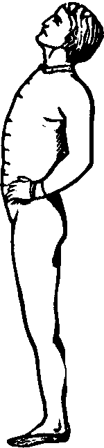
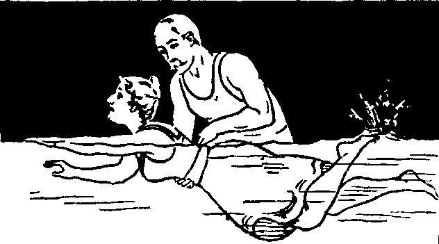
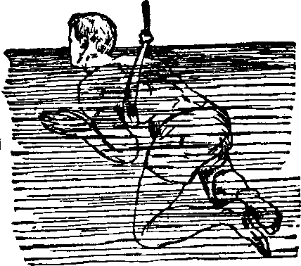
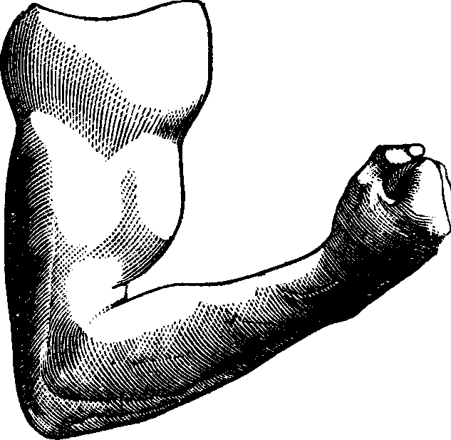
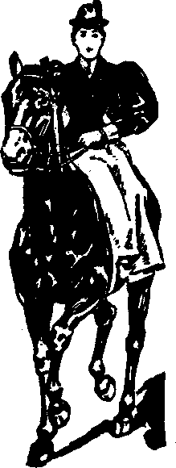

| << PREVIOUS | FIRST | NEXT >> |
| | 01 | 02 | 03 | 04 | 05 | 06 | 07 | 08 | 09 | | ||
The object of hygiene is the preservation of health. Hitherto, we have considered, at some length, the science of functions, or Physiology, and now, under the head of Hygiene, we will give an outline of the means of maintaining the functional integrity of the system. It is difficult to avoid including under this head Preventive Medicine, the special province of which is to abate, remove, or destroy the many causes of disease.
The Greeks bestowed divine honors upon Aesculapius, because he remedied the evils of mankind and healed the sick. The word hygiene is derived from Hygeia, the name of the Greek goddess of health. As male and female are made one in wedlock, so Medicine and Hygiene, restoration and preservation, are inseparably united.
Hygiene inculcates sanitary discipline, medicine, remedial discipline; hygiene prescribes healthful agencies, medical theory and practice, medicinal agencies; hygiene ministers with salubrious and salutary agents, medicine assuages with rectifying properties and qualities; hygiene upholds and sustains, medical practice corrects and heals; the one is preservative and conservative, the other curative and restorative. These discriminations are as radical as health and sickness, as distinct as physiology and pathology, and to confound them is as unnatural as to look for the beauties of health in the chamber of sickness.
[pg 223]The true physician brings to his aid Physiology, Hygiene, and Medicine, and combines the science of the former with the art of the latter, that restoration may be made permanent, and the health preserved by the aid of hygiene. But when any one makes Hygiene exclusively the physician, or deals wholly in hygienic regulations with little respect for physiology, or lavishly advertises with hygienic prefixes, we may at once consider it a display, not of genuine scientific knowledge, but only of the ignorance of a quack. Some of the modern twaddle about health is a conglomeration of the poorest kind of trash, expressing and inculcating more errors and whims than it does common sense. Many persons dilate upon these subjects with amazing flippancy, their mission seeming to be to traduce the profession rather than to act as help-mates and assistants. We do not believe that there is any real argument going on between the educated members of the medical profession but rather that the senseless clamor we occasionally hear comes only from the stampede of some routed, demoralized company of quacks.
In the following pages we shall introduce to the reader's attention several important hygienic subjects, although there are many more that ought to receive special notice. Such as we do mention, demand universal attention, because a disregard of the conditions which we shall enumerate, is fraught with great danger. Our lives are lengthened or shortened by the observance or neglect of the rules of common sense, and these do not require any great personal sacrifice, or the practice of absurd precautions.
Ordinary atmospheric air contains nearly 2,100 parts of oxygen and 7,900 of nitrogen, and about three parts of carbonic acid, in 10,000 parts; expired air contains about 470 parts of carbonic acid, and only between 1500 and 1600 parts of oxygen, while the quantity of nitrogen undergoes little or no alteration. Thus air which has been breathed has lost about five per cent. of oxygen and has gained nearly five per cent. of carbonic acid. In addition the expired air contains [pg 224]a greater or less quantity of highly decomposable animal matter, and, however dry the atmospheric air may be, the expired air is always saturated with watery vapor, and, no matter what the temperature of the external air may be, that of the exhaled air is always nearly as warm as the blood. An adult man on a average breathes about sixteen times in a minute and at every inspiration takes in about thirty cubic inches of air, and at every expiration exhales about the same amount. Hence, it follows that about 16-2/3 cubic feet of air are passed through the lungs of an adult man every hour, and deprived of oxygen and charged with carbonic acid to the amount of nearly five per cent. The more nearly the composition of the external air approaches that of the expired air, the slower will be the diffusion of carbonic acid outwards and of oxygen inwards, and the more charged with carbonic acid and deficient in oxygen will the blood in the lungs become. Asphyxia takes place whenever the proportion of carbonic acid in the external air reaches ten per cent., providing the oxygen is diminished in like proportion, and it does not matter whether this condition of the external air is produced by shutting out fresh air from a room or by increasing the number of persons who are consuming the same air; or by permitting the air to be deprived of oxygen by combustion by a fire. A deficiency of oxygen and an accumulation of carbonic acid in the atmosphere, produce injurious effects, however, long before the asphyxiating point is attained. Headache, drowsiness, and uneasiness occur when less than one per cent. of the oxygen of the atmosphere is replaced by other matters, and the constant breathing of such an atmosphere lowers vitality and predisposes to disease.
Therefore, every human being should be supplied, by proper ventilation, with a sufficient supply of fresh air. Every adult individual ought to have at least 800 cubic feet of air-space to himself, and this space ought to communicate freely with the external atmosphere by means of direct or indirect channels. Hence, a sleeping-room for one adult person should not be less than nine by ten feet in breadth and length and nine feet in height. What occurred in the Black Hole at Calcutta is an excellent illustration of the effect of vitiated air. One hundred and forty-six Englishmen were confined in a room eighteen [pg 225]feet square, with two small windows on one side to admit air. Ten hours after their imprisonment, only twenty-three were alive.
Ventilation of School Rooms. The depression and faintness from which many students suffer, after being confined in a poorly ventilated school room, is clearly traceable to vitiated air, while the evil is often ascribed to excessive mental exertion. The effect of ventilation upon the health of students is a subject of universal interest to parents and educators, and at present is receiving the marked attention of school authorities. Dr. F. Windsor, of Winchester, Mass., made a few pertinent remarks upon this subject in the annual report of the State Board of Health, of Massachusetts, 1874. One of the institutions, which was spoken of in the report of 1873, as a model, in the warming and ventilation of which much care had been bestowed, was visited in December, 1873. He reports as follows: "I visited several of the rooms, and found the air in all, offensive to the smell, the odor being such as one would imagine old boots, dirty clothes, and perspiration would make if boiled down together; again, in the new model school-house the hot air enters at two registers in the floor on one side, and makes (or is supposed to make) its exit by a ventilator at the floor, on the other side of the room." The master said "the air was supposed to have some degree of intelligence, and to know that the ventilator was its proper exit." Thorough ventilation has been neglected by many school officials on account of the increased expense it causes. In our climate, during seven months at least, pure atmospheric air must be paid for. The construction of vertical ducts, the extra amount of fuel, and the attendant expenditures are the objections which, in the opinion of many persons, outweigh the health and happiness of the future generation. It is necessary for the proper ventilation of our school rooms that an adequate supply of fresh air should be admitted, which should be warmed before being admitted to the room, and which should be discharged as contaminated, after its expiration. The proper ventilation of the school room consists in the warming and introduction of fresh air from without, and the discharge of the expired and unwholesome air from within. This may be accomplished by [pg 226]means of doors, windows, chimneys, and finally by ventilators placed, one near the level of the floor, and the other near the ceiling of the room. The ventilators ought to be arranged on the opposite sides of the room, in order to insure a current, and an abundant supply of air. When trustees and patrons realize that pure air is absolutely essential to health, and that their children are being slowly poisoned by the foul air of school rooms, then they will construct our halls of learning with a due regard for the laws of hygiene, and students will not droop under their tasks on account of the absence of Nature's most bountiful gift, pure air.
Ventilation of Factories and Workshops. This is a subject which demands the immediate attention of manufacturers and employers. The odors of oil, coal gas, and animal products, render the air foul and stagnant, and often give rise to violent diseases among the operatives. From two to four hundred persons are often confined in workshops six hundred feet long, with no means of ventilation except windows on one side only. The air is breathed and re-breathed, until the operatives complain of languor and headache, which they attribute to overwork. The real cause of the headache is the inhalation of foul air at every expansion of the lungs. If the proprietors would provide efficient means for ventilating their workshops, the cost of construction would be repaid with compound interest, in the better health of their operatives and the consequent increase of labor. Our manufacturers must learn and practice the great principle of political economy, namely, that the interests of the laborer and employer are mutual.
Ventilation of our dwellings. Not less important is the ventilation of our dwellings; each apartment should be provided with some channel for the escape of the noxious vapors constantly accumulating. Most of the tenements occupied by the poor of our cities are literally dens of poison. Their children inhale disease with their earliest breath. What wonder that our streets are filled with squalid, wan-visaged children! Charity, indeed, visits these miserable homes, bringing garments and food to their half-famished inmates; but she has been slow to learn that fresh air is just as essential to life as food or clothing. Care should be taken by the public [pg 227]authorities of every city, that its tenement houses do not degenerate into foul hovels, like those of the poor English laborer, so graphically portrayed by Dickens. But ill-ventilated rooms are not found exclusively in the abodes of the poor. True, in the homes of luxury, the effect of vitiated air is modified by food, etc. Men of wealth give far more attention to the architecture and adornment of their houses, to costly decorations and expensive furniture, than to proper ventilation. Farmers, too, are careless in the construction of their cottages. Their dwellings are often built, for convenience, in too close proximity to the barn. Because they do not construct a suitable sewer or drain, the filth and refuse food is thrown out of the back door, where it accumulates and undergoes putrefaction; the vitiated air penetrates the interior of the house, and, there being no means of ventilation, it remains to be breathed by the occupants. The result is, that for the sake of saving a few dollars, which ought to be expended in the construction of necessary flues and sewers, the farmer often sees the child he prizes far more than his broad acres gradually decline, or suddenly fall a victim to fevers or malignant disease. Parents, make your homes healthy, let in the pure, fresh air and bright sunlight, so that your conscience may never upbraid you with being neglectful of the health and lives of your little ones.
Malaria. When about to construct our residences, besides securing proper ventilation and adequate drainage, we ought to select the location for a home on dry soil. Low levels, damp surroundings, and marshy localities not only breed malaria and fevers, but are a prolific cause of colds, coughs, and consumption. Care should be taken not to locate a dwelling where the natural currents of air, or high winds, will be likely to bring the poison of decayed vegetable matter from low lands. Certain brooks, boggy land, ponds, foggy localities, too much shade, all these are favorable to the development of disease. Then the walls of a building should be so constructed as to admit air between the exterior and interior surfaces, otherwise the interior of the house will be damp and unwholesome. In the dead of winter in northern latitudes [pg 228]the house ought to be kept slightly tempered with warmth, both night and day, a condition very favorable to the introduction and change of atmospheric currents. The invigorating tendencies of a dry, pure atmosphere are remarkably beneficial, while air charged with moisture and decay is exceedingly baneful, introducing diseases under various forms.
Neither should the dwelling be shaded by dense foliage. The dampness of the leaves tends to attract malaria. Trees growing a little distance from the house, however, obstruct the transmission of unhealthy vapors arising beyond them. Malaria generally lurks near the surface of the earth, and seems to be more abundant in the night time. Persons sleeping in the upper story of a house may escape its morbid influence, while those occupying apartments on the lower floor, become affected.
Damp cellars, under residences, are a fruitful cause of disease. Dr. Sanford B. Hunt, in an article in the Newark Daily Advertiser, speaking of the recent epidemic of diphtheria in New York City, says:
"Pestilences that come bodily, like cholera, are faced and beaten by sanitary measures. Those which come more subtly need for their defeat only a higher detective ability and a closer study of causes, many of which are known, but hidden under the cellars of our houses, and which at last are only preventable by public authority and at public expense in letting out the imprisoned dampness which saturates the earth on which our dwellings are built. Where wood rots, men decay. This is clearly shown in the sanitary map printed in the Times. In the great district surrounding Central Park, and which participates in its drainage system, there are no cases. On the whole line of Fifth Avenue there are none. The exempt districts are clearly defined by the character of the soil, drainage, and sewerage, and by the topography, which either has natural or artificial drainage, but most of which is so dry that only surface-water and house-filth—which does not exist in those palaces—can affect the health of the residents. But in the tenement houses and on the made lands where running streams have been filled in and natural springs choked up by earth [pg 229]fillings, diphtheria finds a nidus in which to develop itself. The sanitary map coincides precisely with the topographic map made by Gen. Viele. Where he locates buried springs and water-courses, there we find the plague spots of diphtheria and in the same places, on previous maps prepared by the Board of Health, we find other low types and stealthy diseases, such as typhoid and irruptive fevers, and there we shall find them again when the summer and autumnal pestilences have yielded place to those which belong to the indoor poisoned air in the winter. The experience of other cities, notably London and Dublin, once plague spots and now as healthy as any spot on earth, proves that most of the causations of disease are within the control of the competent sanitary engineer, even in localities crowded beyond American knowledge, and houses built upon soil saturated for centuries with the offal of successive and uncleanly generations. Wet earth, kept wet by the boiling up of imprisoned springs, is a focus of disease. Dry earth is one of the most perfect deodorizers, the best of oxydizers and absorbents, destroying the germs of disease with wonderful certainty. On those two facts rests the theory of public hygiene."
The air we breathe is heavily loaded with minute particles of floating dust, their presence being revealed only by intense local illumination. Professor Tyndall says: "solar light, in passing through a dark room, reveals its track by illuminating the dust floating in the air. 'The sun,' says Daniel Culverwell, 'discovers atoms, though they be invisible by candle-light, and makes them dance naked in his beams.'"
After giving the details and results of a series of experiments in which he attempted to extract the dust from the air of the Royal Institute by passing it through a tube containing fragments of glass wetted with concentrated sulphuric acid, and thence through a second tube containing fragments of marble wetted with a strong solution of caustic potash, which experiments were attended with perfect failure, the Professor continues, "I tried to intercept this floating matter in various ways; and on the day just mentioned, prior to sending the [pg 230]air through the drying apparatus, I carefully permitted it to pass over the tip of a spirit-lamp flame. The floating matter no longer appeared, having been burnt up by the flame. It was, therefore, of organic origin. I was by no means prepared for this result; for I had thought that the dust of our air was, in great part, inorganic and non-combustile." In a foot note he says, "according to an analysis kindly furnished me by Dr. Percy, the dust collected from the walls of the British Museum contains fully fifty per cent of inorganic matter. I have every confidence in the results of this distinguished chemist; they show that the floating dust of our rooms is, as it were, winnowed from the heavier matter." Again he says: "the air of our London rooms is loaded with this organic dust, nor is the country air free from its presence. However ordinary daylight may permit it to disguise itself, a sufficiently powerful beam causes dust suspended in air to appear almost as a semi-solid. Nobody could, in the first instance, without repugnance, place the mouth at the illuminated focus of the electric beam and inhale the thickly-massed dust revealed there. Nor is the repugnance abolished by the reflection that, although we do not see the floating particles, we are taking them into our lungs every hour and minute of our lives." "The notion was expressed by Kircher and favored by Linnaeus, that epidemic diseases are due to germs which float in the atmosphere, enter the body, and produce disturbance by the development within the body of parasitic life. While it was struggling against great odds, this theory found an expounder and a defender in the President of this institution. At a time when most of his medical brethren considered it a wild dream, Sir Henry Holland contended that some form of the germ-theory was probably true." Professor Tyndall proposes means by the application of which air loaded with noxious particles may be freed from them before entering the air passages. The following embodies his suggestions on this point:
"I now empty my lungs as perfectly as possible, and placing a handful of cotton-wool against my mouth and nostrils, inhale through it. There is no difficulty in thus filling the lungs [pg 231]with air. On expiring this air through a glass tube, its freedom from floating matter is at once manifest. From the very beginning of the act of expiration the beam is pierced by a black aperture. The first puff from the lungs abolishes the illuminated dust, and puts a patch of darkness in its place; and the darkness continues throughout the entire course of the expiration. When the tube is placed below the beam and moved to and fro, the same smoke-like appearance as that obtained with a flame is observed. In short, the cotton-wool, when used in sufficient quantity, and with due care, completely intercepts the floating matter on its way to the lungs.
The application of these experiments is obvious. If a physician wishes to hold back from the lungs of his patient, or from his own, the germs or virus by which contagious disease is propagated, he will employ a cotton-wool respirator. If perfectly filtered, attendants may breathe the air unharmed. In all probability the protection of the lungs and mouth will be the protection of the entire system. For it is exceedingly probable that the germs which lodge in the air-passages, or find their way with the saliva into the stomach with its absorbent system, are those which sow in the body epidemic disease. If this be so, then disease can be warded off by carefully prepared filters of cotton-wool. I should be most willing to test their efficacy in my own person. But apart from all doubtful applications, it is perfectly certain that various noxious trades in England may be rendered harmless by the use of such filters. I have had conclusive evidence of this from people engaged in such trades. A form of respirator devised by Mr. Garrick, a hotel proprietor in Glasgow, in which inhalation and exhalation occur through two different valves, the one permitting the air to enter through the cotton-wool, and the other permitting the exit of the air direct into the atmosphere, is well adapted for this purpose. But other forms might readily be devised."
Our dwellings ought freely to admit the sunlight. Diseases which have baffled the skill of physicians have been known to yield when the patients were removed from dark rooms to light and cheerful apartments. Lavoisier placed light, as an [pg 232]agent of health, even before pure air. Plants which grow in the shade are slender and weak, and children brought up in dark rooms are pale, sallow, and rickety. It is a bad practice to avoid the sunlight through fear of spoiling the complexion, since the sun's rays are necessary to give to it the delicate tints of beauty and health. Air is necessary for the first inspiration and the last expiration of our lives, but the purity and healthfulness of the atmosphere depend upon the warming rays of the sun, while our bodies require light in order that their functions may be properly performed. We know that without solar light, there can be no proper vegetable growth, and it is equally necessary for the beauty and perfection of animal development. Our dwellings should therefore be well lighted and made as bright and cheerful as possible. Women who curtain the windows, soften the light, and tint the room with some mellow shade, may do so in order to hide their own faulty complexions. The skin of persons confined in dungeons or in deep mines becomes pale or sickly yellow, the blood grows watery, the skin blotches, and dropsy often intervenes. On the other hand, invalids carried out from darkened chambers into the bright sunlight are stimulated, the skin browns, nutrition becomes more active, the blood improves, and they become convalescent. Light is especially necessary for the healthy growth of children. There is nothing more beautiful and exhilarating than the glorious sunlight. Let its luminous, warming, and physiological forces come freely into our dwellings, enter into the chemistry of life, animate the spirits, and pervade our homes and our hearts with its joy-inspiring and health-imparting influences.
[pg 233]The human body is continually undergoing changes, which commence with the earliest dawn of existence and end only with death. The old and worn-out materials are constantly being removed to make room for the new. Growth and development, as well as the elimination of worn-out and useless matter, continually require new supplies, which are to be derived from our food. To fulfill these demands it is necessary that the nutriment should be of the proper quality, and of sufficient variety to furnish all the constituents of the healthy body. In order that food may be of utility, like other building materials, it must undergo preparation; the crude substance must be worked up into proper condition and shape for use, in other words, it must be digested. But this does not end the process of supply, each different substance must be taken by the different bands of workmen, after due preparation in the workshop, to its appropriate locality in the structure, and there fitted into its proper place; this is assimilation. In reality it becomes a portion of the body, and is advantageous in maintaining the symmetry and usefulness of the part to which it is assigned; this constitutes the ultimate object of food, nutrition.
Eating is the process of receiving the food into the mouth, i.e., prehension; mastication and insalivation—minutely dividing and mixing it with the saliva; deglutition—conveying it to the stomach. Plenty of time should be taken at meals to thoroughly masticate the food and mix it with the saliva, which, [pg 234]being one of the natural solvents, favors its farther solution by the juices of the stomach; the healthy action of the digestive powers is favored by tranquility of mind, agreeable associations, and pleasant conversation while eating. It is proverbial of the American people that they bolt their food whole, washing it down with various fluids, thus forcing the stomach to perform not only its own duties, but also those of the teeth and salivary glands. This manner of dispatching food, which should go through the natural process above described, is not without its baleful consequences, for the Americans are called a nation of dyspeptics.
Eating slowly, masticating the food thoroughly, and drinking but moderately during meals, will allow the juices of the stomach to fulfill their proper function, and healthy digestion and nutrition will result. If the food is swallowed nearly whole, not only will a longer time be required for its solution, but frequently it will ferment and begin to decay before nutritive transformation can be effected, even when the gastric juice is undiluted with the fluids which the hurried eater imbibes during his meal.
Regularity of Meals cannot be too strongly insisted upon. The stomach, as well as other parts of the body, must have intervals of rest or its energies are soon exhausted, its functions impaired, and dyspepsia is the result. Nothing of the character of food should ever be taken except at regular meal times. Some persons are munching cakes, apples, nuts, candies, etc., at all hours, and then wonder why they have weak stomachs. They take their meals regularly, and neither eat rapidly nor too much, and yet they are troubled with indigestion. The truth is they keep their stomachs almost constantly at work, and hence tired out, which is the occasion of the annoyance and distress they experience.
Eating too much. It should always be remembered that the nutrition of our bodies does not depend upon the amount eaten, but upon the amount that is digested. Eating too much is nearly as bad as swallowing the food whole. The stomach is unable to digest all of it, and it ferments and gives rise to unpleasant results. The unnatural distention of the stomach with food causes it to press upon the neighboring [pg 235]organs, interfering with the proper performance of their functions, and, if frequently repeated, gives rise to serious disease. People more frequently eat too much than too little, and to omit a meal when the stomach is slightly deranged is frequently the best medicine. It is an excellent plan to rise from the table before the desire for food is quite satisfied.
Late Suppers. It is generally conceded that late suppers are injurious, and should never be indulged in. Persons who dine late have little need of food after their dinner, unless they are kept up until a late hour. In such cases a moderate meal may be allowed, but it should be eaten two or three hours before retiring. Those who dine in the middle of the day should have supper, but sufficiently early so that a proper length of time may elapse before going to bed, in order that active digestion may not be required during sleep. On the other hand, it is not advisable to go wholly without this meal, but the food eaten should be light, easily digestible, and moderate in quantity. Persons who indulge in hearty suppers at late hours, usually experience a poor night's rest, and wake the next morning unrefreshed, with a headache and a deranged stomach. Occasionally more serious consequences follow; gastric disorders result, apoplexy is induced; or, perhaps, the individual never wakes.
Feeding Infants. For at least six or seven months after birth, the most appropriate food for an infant is its mother's milk, which, when the parent is healthy, is rich in all the elements necessary for its growth and support. Next to the mother's milk, that of a healthy nurse should be preferred; in the absence of both, milk from a cow that has recently calved is the most natural substitute, in the proportion of one part water to two parts milk, slightly sweetened. The milk used should be from but one cow. All sorts of paps, gruels, panadas, cordials, laxatives, etc., should be strictly prohibited, for their employment as food cannot be too severely censured. Vomiting, diarrhea, colic, green stools, griping, etc., are the inevitable results of their continued use. The child should be fed at regular intervals, of about two hours, and be limited to a proper amount each time, which, during the first month, is about two ounces. From 11 P.M. to 5 A.M. the child [pg 236]should be nursed but once. As the child grows older the intervals should be lengthened, and the amount taken at a time gradually increased. The plan of gorging the infant's stomach with food every time it cries, cannot be too emphatically condemned.
After the sixth or seventh month, in addition to milk, bits of bread may be allowed, the quantity being slowly increased, thus permitting the diet to change gradually from fluid to solid food, so that, when the teeth are sufficiently developed for mastication, the child has become accustomed to various kinds of nourishment. Over-feeding, and continually dosing the child with cordial, soothing syrups, etc., are the most fruitful sources of infant mortality, and should receive the condemnation of every mother in the land.
Preparation Of Food. The production of pure blood requires that all the food selected should be rich in nutritious elements, and well cooked. To announce a standard by which all persons shall be guided in the selection and preparation of their food is impossible. Especially is this the case in a country the inhabitants of which represent almost every nation on the face of the globe. Travelers are aware that there is as much diversity in the articles of food and methods of cookery, among the various nationalities, as in the erection of their dwellings, and in their mental characteristics. In America we have a conglomeration of all these peoples; and for a native American to lay down rules of cookery for his German, French, English, Welsh, and Irish neighbors, or vice versa, is useless, for they will seldom read them, and, therefore, cannot profit by them. There are, however, certain conditions recognized by the hygienic writers of every nation. The adequate nutrition of the organic tissues demands a plentiful supply of pure blood, or the digestive apparatus will become impaired, the mental processes deranged, and the entire bony and muscular systems will lose their strength and elasticity, and be incapacitated for labor.
Different Kinds of Food Required. The different periods and circumstances of life require their appropriate food, and the welfare of mankind demands that it should supply both the inorganic and organic substances employed in the development of every tissue. The inorganic elements employed in our [pg 237]construction, of which Phosphorus, Sulphur, Soda, Iron, Lime, and Potash are the most important, are not considered as aliments, but are found in the organic kingdom, variously arranged and combined with organic materials in sufficient quantities for ordinary purposes. When, however, from any cause, a lack of any of these occurs, so that their relative normal proportions are deranged, the system suffers, and restoration to a healthy condition can only be accomplished by supplying the deficiency; this may be done by selecting the article of food richest in the element which is wanting, or by introducing it as a medicine. It must be remembered that those substances which enter into the construction of the human fabric, are not promiscuously employed by nature, but that each and every one is destined to fulfill a definite indication.
Lime enters largely into the formation of bone, either as a phosphate or a carbonate, and is required in much greater quantities in early life, while the bone is undergoing development, than afterwards. In childhood the bones are composed largely of animal matter, being pliable and easily moulded. For this reason the limbs of young children bend under the weight of their bodies, and unless care is taken they become bow-legged and distorted. Whenever there is a continued deficiency of the earthy constituents, disease of the bones ensues. Therefore, during childhood, and particularly during the period of dentition, or teething, the food should be nutritious and at the same time contain a due proportion of lime, which is preferable in the form of a phosphate. When it cannot be furnished by the food, it should be supplied artificially. Delayed, prolonged, and tedious dentition generally arises from a deficiency of lime.
With the advance of age it accumulates, and the bone becomes hard, inelastic, and capable of supporting heavy weights. Farther on, as in old age, the animal matter of bone becomes diminished, and lime takes its place, so that the bones become brittle and are easily broken. Lime exists largely in hard water, and to a greater or less extent in milk, and in nearly all foods except those of an acid character.
Phosphorus exists in various combinations in different parts of the body, particularly in the brain and nervous system. Persons who perform a large amount of mental labor require [pg 238]more phosphorus than those engaged in other pursuits. It exists largely in the hulls of wheat, in fish, and in eggs. It should enter to a considerable extent into the diet of brain workers, and the bread consumed by them should be made of unbolted flour.
Sulphur, Iron, Soda, and Potash are all necessary in the various tissues of the body, and deficiency of any one of them, for any considerable length of time, results in disease. They are all supplied, variously arranged and combined, in both animal and vegetable food; in some articles they exist to a considerable extent, in others in much smaller quantities. Sulphur exists in eggs and in the flesh of animals, and often in water. Iron exists in the yolk of eggs, in flesh, and in several vegetables. Soda is supplied in nearly all food, and largely in common salt, which is a composition of sodium and hydrochloric acid, the latter entering into the gastric juice. Potash exists, in some form or other, in sufficient quantities for health, in both vegetable and animal food.
Classes of Food. All kinds of food substances may be divided into four classes. Proteids, Fats, Amyloids, and Minerals. Proteids are composed of the four elements, carbon, hydrogen, oxygen, and nitrogen, sometimes combined with sulphur and phosphorus. In this class are included the gluten of flour; the albumen, or white of eggs; and the serum of the blood; the fibrin of the blood; syntonin, the chief constituent of muscle and flesh, and casein, one of the chief constituents of cheese, and many other similar, but less frequent substances.
Fats are composed of carbon, hydrogen, and oxygen only, and contain more hydrogen than would be required to form water if united with the oxygen which they contain. All vegetable and animal oils and fatty matters are included in this class.
Amyloids consist of substances which are also composed of carbon, oxygen, and hydrogen only; but they contain just enough hydrogen to produce water when combined with their oxygen, or two parts of hydrogen to one of oxygen. This division includes sugar, starch, dextrine, and gum. The above three classes of food-stuffs are only obtained through the activity of living organisms, vegetable or animal, and have [pg 239]been, therefore, appropriately termed by Prof. Huxley, vital food-stuffs.
The mineral food-stuffs may, as we have seen, be procured from either the living or the non-living world. They include water and various earthy, metallic, and alkaline salts.
Variety of Food Necessary. No substance can serve permanently for food except it contains a certain quantity of proteid matter in the shape of albumen, fibrin, casein, etc., and, on the other hand, any substance containing proteid matter in a shape in which it can be readily assimilated, may serve as a permanent vital food-stuff. Every substance, which is to serve as a permanent food, must contain a sufficient quantity, ready-made, of this most important and complex constituent of the body. In addition, it must also contain a sufficient quantity of the mineral ingredients which enter into the composition of the body. Its power of supporting life and maintaining the weight and composition of the body remains unaltered, whether it contains fats or amyloids or not. The secretion of urea, and, consequently, the loss of nitrogen, goes on continually, and the body, therefore, must necessarily waste unless the supply of proteid matter is constantly renewed, since this is the only class of foods that contains nitrogen in any considerable quantity. There can be no absolute necessity for any other food-stuffs but those containing the proteid and mineral elements of the body. From what has been said, it will readily be seen that whether an animal be carnivorous or herbivorous, it begins to starve as soon as its vital food-stuffs consist only of amyloids, or fats, or both. It suffers from what has been termed nitrogen starvation, and if proteid matters are withheld entirely, it soon dies. In such a case, and still more in the case of an animal which is entirely deprived of vital food, the organism, as long as it continues to live, feeds upon itself, the waste products necessarily being formed at the expense of its own body.
Although proteid matter is the essential element of food, and under certain circumstances may be sufficient of itself to support the body, it is a very uneconomical food. The white of an egg, which may be taken as a type of the proteids, contains about fifteen per cent. of nitrogen, and fifty-three per cent. of carbon; therefore, a man feeding upon this, would [pg 240]take in about three and a half times as much carbon as nitrogen. It has been proved that a healthy, adult man, taking a fair amount of exercise and maintaining his weight and body temperature, eliminates about thirteen times as much carbon as nitrogen. However, if he is to get his necessary quantity, about 4000 grains of carbon, out of albumen, he must eat 7,547 grains of that substance; but this quantity of albumen contains nearly four times as much nitrogen as he requires. In other words, it takes about four pounds of lean meat, free from fat, to furnish 4,000 grains of carbon, the quantity required, whereas one pound yields the requisite quantity of nitrogen. Thus a man restricted exclusively to a proteid diet, must take an enormous quantity of it. This would involve a large amount of unnecessary physiological labor, to comminute, dissolve, and absorb the food, and to excrete the superfluous nitrogenous matter. Unproductive labor should be avoided as much in physiological as in political economy. The universal practice of subsisting on a mixed diet, in which proteids are mixed with fats or amyloids, is therefore justifiable.
Fats contain about 80 per cent. of carbon, and amyloids about 40 per cent. We have seen that there is sufficient nitrogen in a pound of meat free from fat, to supply a healthy adult man for twenty-four hours, but that it contains only one-fourth of the quantity of carbon required. About half a pound of fat, or one pound of sugar, will supply the quantity of carbon necessary. The fat, if properly subdivided, and the sugar, by reason of its solubility, pass with great ease into the circulation, the physiological labor, consequently, being reduced to a minimum.
Several common articles of diet contain in themselves all the necessary elements. Thus, butchers' meat ordinarily contains from 30 to 50 per cent. of fat; and bread contains the proteid, gluten, and the amyloids, starch and sugar, together with minute quantities of fat. However, on account of the proportion in which these proteid and other components of the body exist in these substances, neither of them, by itself is such a physiologically economical food, as it is when combined with the other in the proportion of three to eight, or three quarters of a pound of meat to two pounds of bread a day.
[pg 241]It is evident that a variety of food is necessary for health. Animals fed exclusively upon one class, or upon a single article of diet, droop and die; and in the human family we know that the constant use of one kind of diet causes disgust, even when not very long continued. Consequently, we infer that the welfare of man demands that his food be of sufficient variety to supply his body with all of its component parts. If this is not done the appetite is deranged, and often craves the very article which is necessary to supply the deficiency. After the component parts of the organism have assimilated the nutritious elements of particular kinds of food for a certain length of time, they lose the power of effecting the necessary changes for proper nutrition, and a supply of other material is imperatively demanded. When the diet has been long restricted to proteids, consisting largely of salt meats, fresh vegetables and fruits containing the organic acids, become indispensable; otherwise, the scorbutic condition, or scurvy, is almost sure to be developed. Fresh vegetables and fruits should be eaten in considerable quantities at the proper seasons.
Value Of Animal Food. The principal animal food used in this country consists of Pork, Mutton, Beef, and Fish. Beef and mutton are rich in muscle-producing material. Although pork is extensively produced in some portions of this country, and enters largely into the diet of some classes, yet its use, except in winter, is not to be encouraged. The same amount of beef would give far greater returns in muscular power.
In addition to the meats mentioned, Wild Game furnishes palatable, nutritious, and easily-digested food. Domestic Fowls, when young, are excellent, and with the exception of geese and ducks, are easily digested. Wild Birds are considered much healthier food than those which are domesticated. All of these contain more or less of the elements which enter into the composition of the four classes of foods.
Vegetable Foods. Wheat is rich in all the elements which compose the four classes, and, when the flour is unbolted, it is one of the best articles for supplying all the elements.
Barley stands next to wheat in nourishing qualities, but is not so palatable.
[pg 242]Oats are rich in all the elements necessary for nutrition. Oatmeal is a favorite article of diet among the Scotch, and, judging from their hardy constitutions, their choice is well founded. In consequence of the large proportion of phosphorus which they contain, they are capable of furnishing a large amount of nourishment for the brain.
Rye is nutritious, but it is not so rich in tissue-forming material.
Indian Corn is an article well known and extensively used throughout the United States, and is a truly valuable one, capable of being prepared in a great variety of ways for food. It contains more carbon than wheat, and less nitrogen and phosphorus, though enough of both to be extremely valuable.
Rice is rather meagre in nutriment; it contains but little phosphorous matter, with less carbon than other cereals, and is best and most generally employed as a diet in tropical countries.
Beans and Peas are rich in nutritious matter, and furnish the manual laborer with a cheap and wholesome diet.
The Potato is the most valuable of all fresh vegetables grown in temperate climates. Its flavor is very agreeable, and it contains very important nutritive and medicinal qualities, and is eaten almost daily by nearly every family in North America. Until very recently it, with the addition of a little butter-milk or skim-milk, constituted almost the sole diet of the Irish people. The average composition of the potato is stated by Dr. Smith to be as follows: Water 75 per cent., nitrogen 2.1, starch 18.8, sugar 3.2, fat 0.2, salts 0.7. The relative values of different potatoes may be ascertained very correctly by weighing them in the hand, for the heavier the tuber the more starch it contains.
Turnip and Cabbage are 92.5 per cent. water, and, consequently, poor in nutrition, though they are very palatable. The solid portions of cabbage, however, are rich in albumen.
It is evident that the quantity necessary to maintain the system in proper condition must be greatly modified by the habits of life, the condition of the organism, the age, the sex, and the climate. The daily loss of substance which must be [pg 243]replaced by material from without, as we have seen, is very great. In addition to the loss of carbon and nitrogen, about four and a half pounds of water are removed from the system in twenty-four hours, and it is necessary that about this quantity should be introduced into the system in some form or other, however much it may be adulterated. Professor Dalton states: "From experiments performed while living on an exclusive diet of bread, fresh meat, and butter, with coffee and water for drink, we have found that the entire quantity of food required during twenty-four hours by a man in full health and taking free exercise in the open air is as follows:
| Meat, | 16 oz., or | 11.03 lb. avoir. |
| Bread, | 19 " | 1.19 " |
| Butter or fat, | 3½ " | 0.22 " |
| Water, | 52 fluid oz., | 3.38 " |
That is to say, rather less than two and a half pounds of solid food, and rather over three pounds of liquid food."
Climate exerts an important influence on the quantity and quality of food required by the system. In northern latitudes the inhabitants are exposed to extreme cold and require an abundant supply of food, and especially that which contains a large amount of fat. On this account fat meat is taken in large quantities and with a relish. The quantity of food consumed by the natives of the Arctic zone is almost incredible. The Russian Admiral, Saritcheff, relates that one of the Esquimaux in his presence devoured a mass of boiled rice and butter which weighed twenty-eight pounds, at a single meal, and Dr. Hayes states that usually the daily ration of an Esquimau is from twelve to fifteen pounds of meat, one-third of which is fat, and on one occasion he saw a man eat ten pounds of walrus flesh at a single meal. The intense cold creates a constant craving for fatty articles of food, and some members of his own party were in the habit of drinking the contents of the oil-kettle with great apparent relish.
Digestibility of Food. Unless an article of diet can be digested it is of no value, no matter how rich it may be in nutriment. The quantity of food taken, will influence to a considerable extent, the time consumed in its digestion. The [pg 244]stomachs of all are not alike in this respect, and the subject of time has been a difficult one to determine. The experiments of Dr. Beaumont with the Canadian, St. Martin, who accidentally discharged the contents of a loaded gun into his stomach, creating an external opening through which the process of digestion could be observed, have furnished us with the following table, which is correct enough to show relatively, if not absolutely, the time required for the digestion of various articles:
| ARTICLES OF DIET. | Mode of Preparation. | Hours. Min. |
|---|---|---|
| Milk | Boiled | 2 00 |
| " | Raw | 2 15 |
| Eggs, fresh | " | 2 00 |
| " " | Whipped | 1 30 |
| " " | Roasted | 2 15 |
| " " | Soft boiled. | 3 00 |
| " " | Hard boiled. | 3 30 |
| " " | Fried | 3 30 |
| Custard | Baked | 2 45 |
| Codfish, cured, dry | Boiled | 2 00 |
| Trout, salmon, fresh | " | 1 30 |
| Trout, salmon, fresh | Fried | 1 30 |
| Bass, striped, | Broiled | 3 00 |
| Flounder, | Fried | 3 30 |
| Catfish, | " | 3 30 |
| Salmon, salted | Boiled | 4 00 |
| Oysters, fresh | Raw | 2 55 |
| " | Roasted | 3 15 |
| " | Stewed | 3 30 |
| Venison steak | Broiled | 1 35 |
| Pig, sucking | Roasted | 2 30 |
| Lamb, fresh | Broiled | 2 30 |
| Beef, fresh, lean, dry | Roasted | 3 30 |
| " with mustard, etc | Boiled | 3 10 |
| " | salt only | 3 36 |
| " | Fried | 4 00 |
| " fresh, lean, rare | Roasted | 3 00 |
| Beefsteak | Broiled | 3 00 |
| Mutton, fresh | " | 3 00 |
| " | Boiled | 3 00 |
| " | Roasted | 3 15 |
| Veal, fresh | Broiled | 4 00 |
| " | Fried | 4 30 |
| Porksteak | Broiled | 3 15 |
| Pork, fat and lean | Roasted | 5 15 |
| " recently salted | Raw | 3 00 |
| " | Stewed | 3 00 |
| " | Broiled | 3 15 |
| ARTICLES OF DIET. | Mode of Preparation. | Hours/Min. |
|---|---|---|
| Pork, recently salted | Fried | 4 15 |
| " | Boiled | 4 30 |
| Turkey, wild | Roasted | 2 18 |
| " tame | " | 2 30 |
| " | Boiled | 2 25 |
| Goose, wild | Roasted | 2 30 |
| Chickens, full-grown | Fricasseed | 2 45 |
| Fowls, domestic | Boiled | 4 00 |
| " | Roasted | 4 00 |
| Ducks, tame | " | 4 00 |
| " wild | " | 4 30 |
| Soup, barley | Boiled | 1 30 |
| " bean | " | 3 00 |
| " chicken | " | 3 00 |
| " mutton | " | 3 30 |
| " oyster | " | 3 30 |
| " beef, vegetables, and bread | " | 4 00 |
| " marrow-bones | " | 4 15 |
| Pig's feet, soused | " | 1 00 |
| Tripe, soused | " | 1 00 |
| Brains, animal | " | 1 45 |
| Spinal marrow, animal | " | 2 40 |
| Liver, beef, fresh | Broiled | 2 00 |
| Heart, animal | Fried | 4 00 |
| Cartilage | Boiled | 4 15 |
| Tendon | " | 5 30 |
| Hash, meat, and vegetables | Warmed | 2 30 |
| Sausage, fresh | Broiled | 3 20 |
| Gelatine | Boiled | 2 30 |
| Cheese, old, strong | Raw | 3 30 |
| Green corn and beans | Boiled | 3 45 |
| Beans, pod | " | 2 30 |
| Parsnips | " | 2 30 |
| Potatoes | Roasted | 2 30 |
| " | Baked | 2 30 |
| " | Boiled | 2 30 |
| Cabbage, head | Raw | 2 30 |
| " " with vinegar | " | 2 00 |
| " | Boiled | 4 30 |
| Carrot, orange | " | 3 13 |
| Turnips, flat | " | 3 30 |
| Beets | " | 3 45 |
| Bread, corn | Baked | 3 15 |
| " wheat, fresh | " | 3 30 |
| Apples, sweet, mellow | Raw | 1 30 |
| " sour | " | 2 00 |
| " " hard | " | 2 50 |
Milk is more easily digested than almost any other article of food. It is very nutritious, and, on account of the variety of the elements which it contains, it is extremely valuable an [pg 246]article of diet, especially when the digestive powers are weakened, as in fevers, or during convalescence from any acute disease. Eggs are also very nutritious and easily digested. Whipped eggs are digested and assimilated with great ease. Fish, as a rule, are more speedily digested than is the flesh of warm-blooded animals. Oysters, especially when taken raw, are very easily digested. We have known dyspeptics who were unable to digest any other kind of animal food, to subsist for a considerable period upon raw oysters. The flesh of mammalia seems to be more easily digested than that of birds. Beef, mutton, lamb, and venison are easily digested, while fat roast pork and veal are digested with difficulty. According to the foregoing table vegetables were digested in about the same time as ordinary animal food, but it should be remembered that a great part of the digestion of these is effected in the small intestine. Soups are, as a rule, very quickly digested. The time required for the digestion of bread is about the same as that required for the digestion of ordinary meats. Boiled cabbage is one of the most difficult substances to digest.
Cookery. "Cookery," says Mrs. Owen, "Is the art of turning every morsel to the best use; it is the exercise of skill, thought, and ingenuity to make every particle of food yield the utmost nourishment and pleasure, of which it is capable." We are indebted to this practical woman for many valuable suggestions in this art; and some of our recommendations are drawn from her experience.
Soups. The nutritious properties, tone, and sweetness of soup depend in the first place upon the freshness and quality of the meat; secondly on the manner in which it is boiled. Soups should be nicely and delicately seasoned, according to the taste of the consumer, by using parsley, sage, savory, thyme, sweet marjoram, sweet basil, or any of the vegetable condiments. These may be raised in the garden, or obtained at the drug stores, sifted and prepared for use. In extracting the juices of meats, in order that soups may be most nutritious, it is important that the meat be put into cold water, or that which is not so hot as to coagulate the albumen (which would prevent it from being extracted), and then, by slow heat and [pg 247]a simmering process, the most nutritious properties will be brought out.
Beef Soup may be made of any bone of the beef, by putting it into cold water, adding a little salt, and skimming it well just before it boils. If a vegetable flavor be desired, celery, carrots, onions, turnips, cabbage, or potatoes, may be added, in sufficient quantities to suit the taste.
Mutton Soup may be made from the fore-quarter, in the same manner as described above, thickened with pearl-barley or rice, and flavored to suit the taste.
Boiled Fish. Clean the fish nicely, then sprinkle flour on a cloth and wrap it around them; salt the water, and, when it boils, put in the fish; let them boil half an hour, then carefully remove them to a platter, adding egg sauce and parsley. To bake fish, prepare by cleaning, scaling, etc., and let them remain in salt water for a short time. Make a stuffing of the crumbs of light bread, and add to it a little salt, pepper, butter, and sweet herbs, and stir with a spoon. Then fill the fish with the stuffing and sew it up. Put on butter, salt, pepper, and flour, having enough water in the dish to keep it from burning, and baste often. A four pound fish will bake in fifty or sixty minutes.
Broiled Steak. Sirloin and porter-house steaks should be broiled quickly. Preserve them on ice for a day or two and their tenderness is much increased. Never broil them until the meal is ready to be served.
Boiled Meat. When meat is to be boiled for eating, put it into boiling water, by which its juices are coagulated and its richness preserved. The slower it boils, the more tender, plump, and white it will be. Meat should be removed as soon as done, or it will lose its flavor and become soggy.
Pork Steaks. The best steaks are cut off the shoulder—ham steaks being rather too dry. They should be well fried, in order to destroy the little living parasites, called Trichinæ which sometimes infest this kind of meat. They are introduced into the stomach by eating ham, pork, or sausages made from the flesh of hogs infested by them. Thorough cooking destroys them, and those who will persist in the use of swine's flesh can afford to have it "done brown."
[pg 248]Baked Mutton. To bake mutton well, a person should have a brisk, sharp fire, and keep the meat well basted. It requires two hours to bake a leg of mutton, weighing eight pounds.
Bread. The health and happiness of a family depend, to a certain extent, on good, well-baked bread. At all events, our enjoyment would be greater if it were only better prepared. We make the following extract from an article printed by the State Board of Health, concerning the food of the people of Massachusetts: "As an example of good bread we would mention that which is always to be had at the restaurant of Parker's Hotel, in Boston. It is not better than is found on the continent of Europe on all the great lines of travel, and in common use by millions of people in Germany and France; but with us, it is a rare example of what bread may be. It is made from a mixture of flour, such as is generally sold in our markets, water, salt, and yeast—nothing else. The yeast is made from malt, potatoes, and hops. The dough is kneaded from one and a half to two hours, and is then thoroughly baked." The truth seems to be that the kneading, which in this country takes the housewife's time and muscle, in Europe is done by the help of machinery. So here, in large villages and cities, people might furnish themselves with good bread, by means of co-operative associations, even at a less cost than at present.
Water. The importance of water in the economy of nature is obvious to all. It is the most abundant substance of which we have knowledge. It composes four-fifths of the weight of vegetables, and three-fourths of that of animals. It is essential to the continuance of organic life. Water is universally present in all of the tissues and fluids of the body. It is not only abundant in the blood and secretions, but it is also an ingredient of the solids of the body. According to the most accurate computations, water is found to constitute from two-thirds to three-fourths of the entire weight of the human body. The following table, compiled by Robin and Verdeil, shows the proportion of water per thousand parts in different solids and fluids:
[pg 249]| Teeth, | 100 |
| Bones, | 130 |
| Cartilage, | 550 |
| Muscles, | 750 |
| Ligaments, | 768 |
| Brain, | 789 |
| Blood, | 795 |
| Synovial fluid, | 805 |
| Bile, | 880 |
| Milk, | 887 |
| Pancreatic juice, | 900 |
| Urine, | 936 |
| Lymph, | 960 |
| Gastric juice, | 975 |
| Perspiration, | 986 |
| Saliva, | 995 |
The Natural Drink of Man. Water constitutes the natural drink of man. No other liquid can supply its place. Its presence, however, in the body is not permanent. It is discharged from the body in different ways; by the urine, the feces, the breath, and the perspiration. In the first two, it is in a liquid form, in the others in a vaporous form. It is estimated that about forty-eight per cent. is discharged in the liquid, and fifty-two per cent. in the vaporous form; but the absolute as well as the relative amount discharged depends upon a variety of circumstances.
Water is never found perfectly pure, since it holds in solution more or less of almost every substance with, which it comes in contact. Rain falling in the country remote from habitations is the purest water that nature furnishes, for it is then only charged with the natural gases of the atmosphere. In cities it absorbs organic and gaseous impurities, as it falls through the air, and flowing over roofs of houses carries with it soot and dust. Water from melted snow is purer than rain-water, since it descends in a solid form, and is therefore incapable of absorbing gases. Rain-water is not adapted to drinking purposes, unless well filtered. All water, except that which has been distilled, contains air, and it is due to this fact, that aquatic animals can live in it; for example, put a fish in distilled water and it will soon die.
Mineral Impurities. Rain-water, which has filtered through the soil and strata of the earth, dissolves the soluble materials, and carries them down to lower levels, until they finally collect in the sea. Common well, spring, and mineral waters contain from 5 to 60 grains to the gallon; sea-water contains 2,000 grains while in some parts of the Dead Sea there are [pg 250]20,000 grams to the gallon. The principal mineral impurities of well and spring water are lime, magnesia, soda, and oxide of iron, combined with carbonic and sulphuric acids, forming carbonates, sulphates, and chloride of sodium, or common salt. The most general, however, are carbonate and sulphate of lime.
Mineral waters are usually obtained from springs which contain a considerable amount of saline matter. Those waters which abound in salts of iron are called chalybeate or ferruginous. Those containing salt are termed saline. Those in which contain sulphur are termed sulphurous. Water derives the quality of hardness from the salts of lime—chiefly the sulphates—which it contains. Hard water, being an imperfect solvent, is unsuitable for washing purposes. There are two varieties of hardness, one of which is temporary, being due to the presence of carbonic acid gas in the water which holds the salts in solution and may be removed by merely boiling the water and thus expelling the gas when the salts are deposited, while the other is permanent and can only be removed by the distillation of the water. It has been ascertained that twelve pounds of the best hard soap must be added to 10,000 gallons of water of one degree of hardness before a lather will remain and, consequently, 0.12 lb. to 100 gallons of water is a measure of one degree of hardness. Since hard water is not so useful in cooking and other domestic purposes, as soft water, causing a great waste of labor and material, it is often highly desirable to soften it, which is effected by the addition of lime in what is known as Clark's process. One ounce of quicklime should be added to 1000 gallons of water for each degree of hardness. It should be first slacked and stirred up in a few gallons and then thoroughly mixed with the entire quantity. Then it should be allowed to remain, and will become clear in about three hours, but should not be drunk for twelve hours.
The purity of drinking water is a matter of much importance. That which contains a minute quantity of lead will give rise to all the symptoms of lead poisoning, if the use of it be sufficiently prolonged. An account is given of the poisoning of the royal family of France, many of whom suffered from this cause when in exile at Claremont. The amount of [pg 251]lead was only one grain in the gallon. Care should therefore be taken to avoid drinking the water which has been contained in leaden pipes. It should always be allowed to run a few minutes before being used.
An excess of saline ingredients, which in small quantities are harmless, frequently produces marked disorders of the digestive organs. A small amount of putrescent matter habitually introduced into the system, as in the use of food, is productive of the most serious results, which can be traced to the direct action of the poison introduced. A case is recorded of a certain locality favorably situated with regard to the access of pure air, where an epidemic of fever broke out much to the astonishment of the inhabitants. Upon observation it was found that the attacks of fever were limited to those families who used water from a neighboring well. The disagreeable taste of the water which had been observed, was subsequently traced to the bursting of a sewer, which had discharged a part of its contents into the well. When the cause was removed, there was no recurrence of the evil effects.
Organic Impurities. "Water is liable to organic contamination from a multitude of causes, such as drainage from dwellings, dust, insects, the decaying of vegetable and animal matter. These impurities may be mechanically suspended or held in solution in the water. Although organic impurities, which are mechanically suspended in water, are poisonous, yet they are generally associated with animalculea, and these feed upon, and finally consume them. Good water never contains animalculæ. They are never found in freshly fallen rain-water, remote from dwellings, but abound, to a greater or less extent in cisterns, marshes, ponds, and rivers. These little workers serve a useful purpose since they consume the dead organic matter from the water, and, having fulfilled their mission, sink to the bottom and die. Water which contains organic matter is exceedingly dangerous to health, and its use should be carefully avoided.
In low lands where the current of streams is sluggish, and shallow pools abound, the water is apt to be more or less infected with decaying vegetable substances. Many people living in such localities, and wishing to obtain water with as little [pg 252]trouble as possible, dig a hole in the ground, a few feet in depth, and allow the stagnant surface water to accumulate. This water is used for drinking and cooking. The result is that ague prevails in such localities.
Care should be taken that wells, from which the water is used for household purposes, are located at a distance from barn-yards, privies, sinks, vaults, and stagnant pools.
Purification of Water. There are various methods of purifying water. It may be accomplished by distillation, which is the most perfect method; by filtration through sand, crushed charcoal, and other porous substances, which deprives it of suspended impurities and living organisms; by boiling, which destroys the vitality of all animal and vegetable matters, drives out the gases and precipitates carbonate of lime, which composes the crust frequently seen upon the inside of tea-kettles or boilers; by the use of chemical agents, which may be employed to destroy or precipitate the deleterious substances. Alum is often used to cleanse roily water, two or three grains in solution, being sufficient for a quart. It causes the impurities to settle to the bottom, so that the clear water can be poured or dipped out for use. One or two grains of the permanganate of potassium will render wholesome a gallon of water containing animal impurities.
How to Use Water. Very little if any water should be taken at meal time, since the salivary glands furnish an abundance of watery fluid to assist in mastication. When these glands are aided with water to "wash down" the food, their functions become feeble and impaired. The gastric juice is diluted and digestion is weakened. Large draughts of cold water ought never to be indulged in, since they cause derangement of the stomach. When the body is overheated, the use of much water is injurious. It should only be taken in small quantities. Thirst may be partially allayed, without injury, by holding cold water in the mouth for a short time and then spitting it out, taking care to swallow but very little. Travelers frequently experience inconvenience from change of water. If the means are at hand, let them purify their drinking water, if not, they should drink as little as possible. Persons who visit the banks of the Ohio, Missouri, or Mississippi rivers and [pg 253]similar localities, almost invariably suffer from some form of gastric or intestinal disease. Water standing in close rooms soon becomes unfit to drink and should not be used. A drink of cold water taken on going to bed, and another on rising are conducive to health, especially in the case of persons troubled with constipation. "Drink water" said the celebrated Dubois to the young persons who consulted him, "drink water, I tell you!" Du Moulin, the great medical authority of his time, wrote, just previous to his death, "I leave two great physicians behind me—diet and water."
Tea and Coffee. These substances are almost universally used as beverages, and when properly employed, serve a four-fold purpose: they quench thirst, excite an agreeable exhilaration, repress the waste of the system, and supply nourishment. In consequence of being generally used at meal times, their stimulant properties are employed to promote digestion, and consequently they are not so objectionable as they might otherwise be. The liquids introduced into the stomach at meal times should not be cold. Tea and coffee are drunk warm, while water, except in a few instances, is always drunk cold, the effects of which have already been shown. That their inordinate use may be injurious no body can deny, but this is equally true of other beverages, even pure, cold water. Scientific investigators inform us that the use of these agents as beverages, when judiciously employed, is not injurious. It has been urged that they are poisonous, but if they are, they are very slow in their operation.
When properly prepared, they are very agreeable beverages, and as man will drink more or less at meals, they are allowable; for if their use were excluded, some other beverage would be sought after, and quite likely one of an alcoholic character employed, so of two evils, if this be an evil, let us choose the least. Unlike alcoholic stimulants, they exhilarate without a depressing reaction after their influence has passed off. But one cup should be drunk at a meal, and it should be of moderate strength. The use of large quantities of drink at meals retards digestion by diluting the digestive fluids. The excessive use of large quantities of strong tea or coffee stimulates the brain and causes wakefulness, and produces irritability [pg 254]of the nervous system. When they are productive of such effects, their use is injurious, and should be considerably moderated or wholly discontinued. No criterion can be given by which the amount the system will tolerate can be regulated. What one person may take with impunity, may be deleterious to an other. Individuals differ greatly in this respect. There are some who cannot tolerate them at all, either because of some peculiarity of constitution, or on account of disease. And sometimes when tea is agreeable and beneficial, coffee disagrees with the individual and vice versa. Persons of nervous habits whether natural or acquired, are apt to find their wakefulness and irritability increased by the use of tea, particularly if strong, while coffee will have a tranquilizing effect. Persons of a lymphatic or bilious temperament often find that coffee disagrees with them, aggravating their troubles and causing biliousness, constipation, and headache, while tea proves agreeable and beneficial. Whenever they disagree with the system, the best rule is to abandon their use. We find many persons who do not use either, and yet enjoy health, a fact which proves that they are not by any means indispensable, and, no doubt, were it customary to go without them, their absence would be but slightly missed.
Tea and coffee are adulterated to a very great extent, and persons using them will be greatly imposed upon. This is an evil we cannot remedy. If people make use of them, their experience in selecting them must be their guide; however, it is believed that the Black and Japan varieties of tea are the least apt to be adulterated, and coffee, to insure purity, should be purchased in the berry, and ground by the purchaser.
In preparing tea an infusion should be made by adding boiling water to the leaves, and permitting them to steep for a few minutes only, for a concentrated decoction, made by boiling for a long time, liberates the astringent and bitter principles and drives off the agreeable aroma which resides in a volatile oil.
Coffee should be prepared by adding cold water to the ground berry, and raising it slowly to the boiling point. Long-continued boiling liberates the astringent and bitter principles upon which its stimulant effects to a great extent depend, and [pg 255]drives off with the steam the aromatic oil from which the agreeable taste is derived.
These are divided into three classes: malted, fermented, and distilled. They all contain more or less alcohol, and their effects are, therefore, in some respects similar, and, in the words of Dr. B.W. Richardson, the great English authority on hygiene: "To say this man only drinks ale, that man only drinks wine, while a third drinks spirits, is merely to say, when the apology is unclothed, that all drink the same danger. * * Alcohol is a universal intoxicant, and in the higher orders of animals is capable of inducing the most systematic phenomena of disease. But it is reserved for man himself to exhibit these phenomena in their purest form, and to present, through them, in the morbid conditions belonging to his age, a distinct pathology. Bad as this is, it might be worse; for if the evils of alcohol were made to extend equally to animals lower than man, we should soon have, none that were tameable, none that were workable, and none that were eatable." Researches have shown that the proportion of half a drachm of alcohol to the pound weight of the body, is the quantity which usually produces intoxication, and that an increase of this amount to one drachm immediately endangers the life of the individual. The first symptom which attracts attention, when alcohol commences to take effect upon the body, is an increase in the number of the pulsations of the heart. Dr. Parkes and Count Wolowicz conducted a series of interesting experiments on young adult men. They counted the pulsations of the heart, at regular intervals, during periods when the subject drank only water; and then they counted the beats of the heart in the same individual during successive periods in which alcohol was drunk in increasing quantities.
The following details are taken from their report:
"The highest of the daily means of the pulse observed during the first or water period was 77.5; but on this day two observations were deficient. The next highest daily mean was 77 beats.
If instead of the mean of the eight days, or 73.57, we [pg 256]compare the mean of this one day, viz., 77 beats per minute, with the alcoholic days, so as to be sure not to over-estimate the action of the alcohol, we find:
On the ninth day, with one fluid ounce of alcohol,
the heart beat 430 times more.
On the tenth day, with two fluid ounces, 1,872 times more.
On the eleventh day, with four fluid ounces, 12,960 times more.
On the twelfth day, with six fluid ounces, 30,672 times more.
On the thirteenth day, with eight fluid ounces, 23,904 times more.
On the fourteenth day, with eight fluid ounces, 25,488 times more.
But as there was ephemeral fever on the twelfth day, it is right to make a deduction, and to estimate the number of beats in that day as midway between the twelfth and twenty-third days, or 18,432. Adopting this, the mean daily excess of beats during the alcoholic days was 14,492, or an increase of rather more than thirteen per cent.
The first day of alcohol gave an excess of one per cent., and the last of twenty-three per cent.; and the mean of these two gives almost the same percentage of excess as the mean of the six days.
Admitting that each beat of the heart was as strong during the alcoholic as in the water period (and it was really more powerful), the heart on the last two days of alcohol was doing one-fifth more work.
Adopting the lowest estimate which has been given of the daily work done by the heart, viz., as equal to 122 tons lifted one foot, the heart, during the alcoholic period, did daily work in excess equal to lifting 15.8 tons one foot, and in the last two days did extra work to the amount of twenty-four tons lifted as far.
The period of rest for the heart was shortened, though, perhaps, not to such an extent as would be inferred from the number of beats; for each contraction was sooner over. The beat on the fifth and sixth days after alcohol was left off, and apparently at the time when the last traces of alcohol were eliminated, showed, in the sphygmographic tracing, signs of unusual feebleness; and, perhaps, in consequence of this, when the brandy quickened the heart again, the tracing showed a more rapid contraction of the ventricles, but less power than [pg 257]in the alcoholic period. The brandy acted, in fact, on a heart whose nutrition had not been perfectly restored."
The flush often seen on the cheeks of those who are under the influence of alcoholic liquors, and which is produced by a relaxed and distended condition of the superficial blood vessels, is erroneously supposed by many to merely extend to the parts exposed to view. On this subject, Dr. Richardson says: "If the lungs could be seen, they, too, would be found with their vessels injected; if the brain and spinal cord could be laid open to view, they would be discovered in the same condition; if the stomach, the liver, the spleen, the kidneys, or any other vascular organs or parts could be laid open to the eye, the vascular engorgement would be equally manifest. In the lower animals I have been able to witness this extreme vascular condition in the lungs, and once I had the unusual, though unhappy opportunity of observing the same phenomenon in the brain of a man who, in a paroxysm of alcoholic delirium, cast himself under the wheels of a railway carriage. The brain, instantaneously thrown out from the skull by the crash, was before me within three minutes after the accident. It exhaled the odor of spirit most distinctly, and its membranes and minute structures were vascular in the extreme. It looked as if it had been recently injected with vermilion injection. The white matter of the cerebrum, studded with red points, could scarcely be distinguished when it was incised, it was so preternaturally red; and the pia mater, or internal vascular membrane covering the brain, resembled a delicate web of coagulated red blood, so tensely were its fine vessels engorged. This condition extended through both the larger and the smaller brain, cerebrum, and cerebellum, but was not so marked in the medulla, or commencing portion of the spinal cord, as in the other portions.
In course of time, in persons accustomed to alcohol, the vascular changes, temporary only in the novitiate, become confirmed and permanent. The bloom on the nose which characterizes the genial toper is the established sign of alcoholic action on the vascular structure.
Recently, physiological research has served to explain the reason why, under alcohol the heart at first beats so quickly, [pg 258]why the pulse rises, and why the minute blood-vessels become so strongly injected.
At one time it was imagined that alcohol acts immediately upon the heart by stimulating it to increased motion; and from this idea,—false idea, I should say,—of the primary action of alcohol, many erroneous conclusions have been drawn. We have now learned that there exist many chemical bodies which act in the same manner as alcohol, and that their effect is not to stimulate the heart, but to weaken the contractile force of the extreme and minute vessels which the heart fills with blood at each of its strokes. These bodies produce, in fact, a paralysis of the organic nervous supply of the vessels which constitute the minute vascular structures. The minute vessels when paralysed offer inefficient resistance to the force of the heart, and the pulsating organ thus liberated, like the main-spring of a clock from which the resistance has been removed, quickens in action, dilating the feebly resistant vessels, and giving evidence really not of increased, but of wasted power."
The continued use of alcoholic liquors in any considerable quantity produces irritation and inflammation of the stomach, and structural disease of the liver. Dr. Hammond has shown that alcohol has a special affinity for nervous matter, and is, therefore, found in greater quantity in the brain and spinal cord than elsewhere in the body. The gray matter of the brain undergoes, to a certain extent, a fatty degeneration, and there is a shrinking of the whole cerebrum, with impairment of the intellectual faculties, muscular tremor, and a shambling gait.
Large doses of alcohol cause a diminution of the temperature of the body, which in fevers is more marked than in the normal state.
In addition to the organic diseases enumerated above, and delirium tremens, the following diseases are frequently the result of the excessive use of alcoholic liquors: epilepsy, paralysis, insanity, diabetes, gravel, and diseases of the heart and blood-vessels.
The physiological deductions of Dr. Richardson are so much in accord with our own that we quote them in full:
"In the first place we gather from the physiological reading of the action of alcohol that the agent is narcotic. I have [pg 259]compared it throughout to chloroform, and the comparison is good in all respects save one, viz.: that alcohol is less fatal than chloroform as an instant destroyer. It kills certainly in its own way, but its method of killing is slow, indirect, and by disease.
The well-proven fact that alcohol, when it is taken into the body, reduces the animal temperature, is full of the most important suggestions. The fact shows that alcohol does not in any sense act as a supplier of vital heat as is commonly supposed, and that it does not prevent the loss of heat as those imagine 'who take just a drop to keep out the cold,' It shows, on the contrary, that cold and alcohol, in their effects on the body, run closely together, an opinion confirmed by the experience of those who live or travel in cold regions of the earth. The experiences of the Arctic voyagers, of the leaders of the great Napoleonic campaigns in Russia, of the good monks of St. Bernard, all testify that death from cold is accelerated by its ally alcohol. Experiments with alcohol in extreme cold tell the like story, while the chilliness of the body which succeeds upon even a moderate excess of alcoholic indulgence leads directly to the same indication of truth.
The conclusive evidence now in our possession that alcohol taken into the animal body sets free the heart, so as to cause the excess of motion of which the record has been given above, is proof that the heart, under the frequent influence of alcohol, must undergo deleterious change of structure. It may, indeed, be admitted in proper fairness, that when the heart is passing through these rapid movements it is working under less pressure than when its movements are slow and natural; and this allowance must needs be made, or the inference would be that the organ ought to stop at once, in function, by the excess of strain put upon it. At the same time the excess of motion is injurious to the heart and to the body at large; it subjects the heart to irregularity of supply of blood, it subjects the body in all its parts to the same injurious influence; it weakens, and, as a necessary sequence, degrades both the heart and the body.
Speaking honestly, I cannot, by any argument yet presented to me, admit the alcohols by any sign that should distinguish them from other chemical substances of the paralysing narcotic class. When it is physiologically understood that what is called [pg 260]stimulation or excitement is, in absolute fact, a relaxation, a partial paralysis, of one of the most important mechanisms in the animal body, the minute, resisting, compensating circulation, we grasp quickly the error in respect to the action of stimulants in which we have been educated, and obtain a clear solution of the well-known experience that all excitement, all passion, leaves, after its departure, lowness of heart, depression of mind, sadness of spirit. We learn, then, in respect to alcohol, that the temporary excitement it produces is at the expense of the animal force, and that the ideas of its being necessary to resort to it, that it may lift up the forces of the animal body into true and firm and even activity, or that it may add something useful to the living tissues, are errors as solemn as they are widely disseminated. In the scientific education of the people no fact is more deserving of special comment than this fact, that excitement is wasted force, the running down of the animal mechanism before it has served out its time of motion.
It will be said that alcohol cheers the weary, and that to take a little wine for the stomach's sake is one of the lessons that comes from the deep recesses of human nature. I am not so obstinate as to deny this argument, There are times in the life of man when the heart is oppressed, when the resistance to its motion is excessive, and when blood flows languidly to the centres of life, nervous and muscular. In these moments alcohol cheers. It lets loose the heart from its oppression; it lets flow a brisker current of blood into the failing organs; it aids nutritive changes, and altogether is of temporary service to man. So far, alcohol may be good, and if its use could be limited to this one action, this one purpose, it would be amongst the most excellent of the gifts of science to mankind. Unhappily, the border line between this use and the abuse of it, the temptation to extend beyond the use, the habit to apply the use when it is not wanted as readily as when it is wanted, overbalance, in the multitude of men, the temporary value that attaches truly to alcohol as a physiological agent. Hence alcohol becomes a dangerous instrument even in the hands of the strong and wise, a murderous instrument in the hands of the foolish and weak. Used too frequently, used too excessively, this agent, which in moderation cheers the failing body, relaxes its vessels too [pg 261]extremely; spoils vital organs; makes the force of the circulation slow, imperfect, irregular; suggests the call for more stimulation; tempts to renewal of the evil, and ruins the mechanism of the healthy animal before its hour for ruin, by natural decay, should be at all near.
It is assumed by most persons that alcohol gives strength, and we hear feeble persons saying daily that they are being 'kept up by stimulants.' This means actually that they are being kept down; but the sensation they derive from the immediate action of the stimulant deceives them and leads them to attribute passing good to what, in the large majority of cases, is persistent evil. The evidence is all-perfect that alcohol gives no potential power to brain or muscle. During the first stage of action it may enable a wearied or a feeble organism to do brisk work for a short time; it may make the mind briefly brilliant; it may excite muscle to quick action, but it does nothing substantially, and fills up nothing it has destroyed, as it leads to destruction. A fire makes a brilliant sight, but leaves a desolation. It is the same with alcohol.
On the muscular force the very slightest excess of alcoholic influence is injurious. I find by measuring the power of muscle for contraction in the natural state and under alcohol, that so soon as there is a distinct indication of muscular disturbance, there is also indication of muscular failure, and if I wished by scientific experiment to spoil for work the most perfect specimen of a working animal, say a horse, without inflicting mechanical injury, I could choose no better agent for the purpose of the experiment than alcohol. But alas! the readiness with which strong, well-built men slip into general paralysis under the continued influence of this false support, attests how unnecessary it would be to subject a lower animal to the experiment. The experiment is a custom, and man is the subject.
The true place of alcohol is clear; it is an agreeable temporary shroud. The savage, with the mansions of his soul unfurnished, buries his restless energy under its shadow. The civilized man overburdened with mental labor, or with engrossing care, seeks the same shade; but it is shade, after all, in which, in exact proportion as he seeks it, the seeker retires from perfect natural [pg 262]life. To search for force in alcohol is, to my mind, equivalent to the act of seeking for the sun in subterranean gloom until all is night.
It may be urged that men take alcohol, nevertheless, take it freely, and yet live; that the adult Swede drinks his average cup of twenty-five gallons of alcohol per year and remains on the face of the earth. I admit force even in this argument, for I know under the persistent use of alcohol there is a limited provision for the continuance of life. In the confirmed alcoholic the alcohol is, in a certain sense, so disposed of that it fits, as it were, the body for a long season, nay, becomes part of it; and yet it is silently doing its fatal work. The organs of the body may be slowly brought into a state of adaptation to receive it and to dispose of it. But in that very preparation they are themselves made to undergo physical changes tending to the destruction of their function, to perversion of their structure, and to all those varied modifications of organic parts which the dissector of the human subject learns to recognize,—almost without concern, and certainly without anything more than commonplace curiosity,—as the devastations incident to alcoholic indulgence."
The statistics collected from the census of the United States for 1860, and given by Dr. De Marmon, in the New York Medical Journal for December, 1870, must carry conviction to all minds of the correctness of the foregoing deductions:
"For the last ten years the use of spirits has, 1. Imposed on the nation a direct expense of 600,000,000 dollars. 2. Has caused an indirect expense of 600,000,000 dollars. 3. Has destroyed 300,000 lives. 4. Has sent 100,000 children to the poorhouses. 5. Has committed at least 150,000 people into prisons and workhouses. 6. Has made at least 1,000 insane. 7. Has determined at least 2,000 suicides. 8. Has caused the loss by fire or violence, of at least 10,000,000 dollars' worth of property. 9. Has made 200,000 widows and 1,000 orphans."
If these were the statistics twenty-four years ago, with our greatly increased population, what must they be to-day? We will let the reader draw his own conclusions.
Malted Liquors. Under this head are included all those liquors into the composition of which malt enters, such as [pg 263]beer, ale, and porter. The proportion of alcohol in these liquors varies greatly. In beer, it is from two to five per cent.; in Edinburgh ale, it amounts to six per cent.; in porter, it is usually from four to six per cent. In addition to alcohol and water, the malted liquors contain from five to fourteen per cent. of the extract of malt, and from 0.16 to 0.60 per cent. of carbonic acid. They possess, according to Pereira, three properties: they quench thirst; they stimulate, cheer, and, if taken in sufficient quantity, intoxicate; and they nourish or strengthen. The first of these qualities is due to the water entering into their composition; the second, to the alcohol; the third is attributed the nutritive principles of the malt.
Objections to their use as Beverages. These articles are either pure or adulterated. In their pure state the objection to their use for this purpose lies in the fact that they contain alcohol. This, as we have seen, is a poisonous substance, which the human system in a state of health does not need. Its use, when the body is in a normal condition, is uncalled for, and can only be deleterious. Beverages containing this poison are more or less deleterious to healthy persons, according to the amount of it which they contain.
These liquors are frequently adulterated, and this increases their injurious effects. The ingenuity of man has been taxed to increase their intoxicating properties; to heighten the color and flavor, to create pungency and thirst; and to revive old beer. To increase the intoxicating power, tobacco or the seeds of the Cocculus indicus are added; to heighten the color and flavor, burnt sugar, liquorice, or treacle, quassia, or strychnine, coriander, and caraway seeds are employed; to increase the pungency, cayenne pepper or common salt is added; to revive old beer, or ale, it is shaken up with green vitriol or sulphate of iron, or with alum and common salt.
Fermented Liquors. These are cider and wine. Cider contains alcohol to the amount of from five to ten per cent., saccharine matter, lactic acid, and other substances. New cider may be drunk in large quantities without inducing intoxication, but old cider is quite as intoxicating as ale or porter.
The composition of wine is very complex, the peculiar qualities which characterize the different varieties cannot be [pg 264]ascertained by chemical analysis. Wine is a solution of alcohol in water, combined with various constituents of the grape. The amount of alcohol in wines ranges from six to forty per cent. As beverages, these are open to the same objections as those manufactured from malt. As a medicine, wine is a useful remedy. Concerning its use in this capacity, Prof. Liebig says: "Wine is a restorative. As a means of refreshment when the powers of life are exhausted—as a means of compensation where a misappropriation occurs in nutrition, and as a means of protection against transient organic disturbances, it is surpassed by no product of nature or art." That an article is useful in medicine, however, is no reason why it should be used as a beverage by those in health. It is rather an argument against such a practice. For it is generally true that the drugs used to restore the diseased system to health, are pernicious or poisonous to it when in a normal condition.
Distilled Liquors. These are whiskey, brandy, and the kindred productions of the still. Whiskey is a solution of alcohol in water, mixed with various other principles which impart to it peculiar physical properties. The amount of alcohol which it contains varies from forty-eight to fifty-six per cent. Old whiskey is more highly prized than the more recent product of the still, from the fact that when kept for some years certain volatile oils are generated which, impart to it a mellowness of flavor.
Brandy is a solution of alcohol in water, together with various other substances. It contains from fifty to fifty-six per cent. of alcohol. Pure brandy is distilled from wine, 1,000 gallons of wine yielding from 100 to 150 gallons of brandy, but a very large proportion of the brandy is made with little or no wine. It is made artificially from high wines by the addition of oil of Cognac, to give it flavor, burnt sugar to give it color, and logwood or catechu, to impart astringency and roughness of taste. The best brandy is obtained by distillation from the best quality of white wines, from the districts of Cognac and Armagnac in France.
There is no physical agent which exerts a more constant or more powerful influence upon health and life, than the [pg 265]atmosphere. The climate in these latitudes is exceedingly variable, ranging all the way from 110° Fahr. in summer to 40° below zero in the winter season. The body of every individual should be so protected from cold, that it can maintain a mean temperature of 98° Fahr.
When the body is warm there is a free and equal circulation of the blood throughout all the structures. When the surface is subjected to cold, the numerous capillaries and minute vessels carrying the blood, contract and diminish in size, increasing the amount of this fluid in the internal organs, thus causing congestion. The blood must go somewhere, and if driven from the surface, it retreats to the cavities within. Hence this repletion of the vital organs causes pain from pressure and fullness of the distended blood-vessels, and the organic functions are embarrassed. Besides, cold upon the surface shuts up the pores of the skin, which are among the most active and important excretory ducts of the system. It is evident, then, that we require suitable clothing, not only for comfort, but to maintain the temperature and functions essential to health and life.
The chief object to be attained by dress is the maintenance of a uniform temperature of the body. To attain this end, it is necessary that the exhalations of the system, which are continually escaping through the pores of the skin, should be absorbed or conducted away from the person. These exudations occur in the form of sensible or insensible perspiration, and the clothing, to be healthy, should be so porous as to allow them freely to escape into the air.
A substance should also be chosen which is known to be a poor conductor of heat. That generated by the system will thus be retained where it is needed, instead of being dispersed into the atmosphere.
We might add that the better the material for accomplishing these purposes, the less will be needed to be worn; for we do not wish to wear or carry about with us any more material than is necessary. It so happens that all of these qualities are found combined in flannel. The value of this article worn next to the skin cannot be over-rated, for while it affords protection from cold during the winter months, it is equally beneficial during the heat of summer, because it imbibes the perspiration, [pg 266]and being very porous, allows it to escape. The skin always feels soft, smooth, and pliable, when it is worn; but, when cotton takes its place, it soon becomes dry and harsh. Its natural adaptability to these purposes, shows that it is equally a comfort and a source of health. Where the skin is very delicate, flannel sometimes causes irritation. In such cases a thin fabric of linen, cotton, or silk, should be worn next the skin, with flannel immediately over it. Where there is a uniform and extreme degree of heat, cotton and linen are very conducive to comfort. But they are unsuitable in a climate or season liable to sudden fluctuations in temperature.
The value of furs, where people are exposed to extreme cold, cannot be overestimated. They are much warmer than wool, and are chiefly used as wraps on going outdoors. They are too cumbrous and expensive for ordinary wear in this latitude, but in places near the poles they constitute the chief clothing of the inhabitants.
The quantity of clothing worn is another important item. The least that is necessary to keep the body well protected and evenly tempered when employed is the rule of health. Some people, instead of wearing flannels next to the body, put on other material in greater abundance, thus confining the perspiration to the skin and making the body chilly. The amount of clothing is then increased, until they are so heavily clad that they cannot exercise. It is far better to wear one thickness of flannel next to the skin, and then cotton, or woolen, for outside garments, and be able to exercise, thus allowing the blood to circulate and to assist in the warming process.
One great fault in dress consists in neglecting to properly clothe the upper extremities. Some people do not reflect upon the necessity, while others are too proud to be directed by plain common sense. In the winter season, the feet should be covered with woolen stockings. The next matter of importance, is to get a thick, broad-soled shoe, so large that it will not prevent the free circulation of the blood. Then for walking, and especially for riding, when the earth is wet and cold, or when there is snow on the ground, wear a flannel-lined rubber or "Arctic" over-shoe. Be sure and keep the feet comfortable and warm at all times.
[pg 267]Our next advice is to keep the legs warm. We were called not long ago, to see a young lady who had contracted a severe cold. She had been to an entertainment where the apartments were nicely warmed, and from thence had walked home late in the evening. We inquired into the circumstances of the case, and ascertained that she wore flannel about her chest, and that she also wore rubbers over her shoes, but the other portions of the lower extremities were protected by cotton coverings. In short, her legs were not kept warm, and she took cold by going out from warm rooms into a chilly atmosphere. A good pair of woolen leggings might have saved her much suffering. The results of insufficient protection of the lower extremities are colds, coughs, consumption, headaches, pain in the side, menstrual derangements, uterine congestion and disorders, besides disablement for the ordinary and necessary duties of life. All these may be prevented by clothing the legs suitably, and wearing comfortable flannels.
Young people can bear a low temperature of the body better than old people, because they possess greater power of endurance. But that is no reason for unnecessary exposure.
The amount of clothing should be regulated according to the heat-generating power of the individual, and also according to the susceptibility to cold. No two persons are exactly alike in these respects. But it is never proper for young people to reject the counsels of experience, or treat lightly the advice to protect themselves thoroughly against the cold. Many a parent's heart has ached as he has followed the mortal remains of a darling child to the grave, knowing that if good advice had been heeded, in all human probability, the life would have been prolonged.
The most deleterious mechanical errors in clothing are those which affect the chest and body. Tight lacing still plays too important a part in dress. It interferes with the free and healthy movements of the body, and effects a pressure which is alike injurious to the organs of respiration, circulation, and digestion. The great muscle of respiration, the diaphragm, is impeded in its motion, and is, therefore, unable to act freely. The large blood-vessels are compressed, and when the pressure is excessive the heart and lungs are also subjected to restraint [pg 268]and thrown out of their proper positions. From the compression of the liver and stomach, the functions of digestion are impeded, a distaste for solid food, flatulency and pain after eating are the unmistakable proofs of the injury which is being inflicted.
The evil effects of such pressure are not confined to actual periods of time during which this pressure is applied. They continue after it has been removed and when the chest and trunk of the body have thus been subjected to long-continued pressure they become permanently deformed. These deformities necessarily entail great suffering in child-bearing.
The evil effects of mechanical pressure on other parts of the body are not uncommon. The leg is sometimes so indented by a tight garter that the returning flow of blood through the veins is prevented, and a varicose condition of these vessels is produced.
Irregular and excessive pressure on the foot by imperfectly fitting shoes or boots produce deformities of the feet and cause much suffering. The high heels which are so common on the shoes of women and children inflict more than a local injury. Every time the body comes down upon the raised heel with its full weight a slight shock or vibration is communicated throughout the entire extent of the spinal column, and the nervous mechanism is thereby injured. Furthermore, displacements of the pelvic organs frequently result from these unnatural and absurd articles of dress. Women of fashion are subjected to much annoyance from wearing long, flowing skirts suspended from their waists to trail uselessly on the floor and gather dust. It is impossible for the wearers of these ridiculous garments to exercise their limbs properly or to breathe naturally. Indigestion, palpitation, shortness of breath, and physical degeneracy are the inevitable consequences of their folly. The skirts should always be suspended from the shoulders and not from the hips. It is especially important that the clothing of children should not fit too tightly.
It is very important that the clothing should be kept clean. That which is worn for a long time becomes saturated with the excretions and exhalations of the body, which prevent free transpiration from the pores of the skin, and thereby induce mental inactivity and depression of the physical powers. Unclear clothing may be the means of conveying disease. Scarlet [pg 269]fever has been conveyed frequently by the clothing of a nurse into a healthy family. All of the contagious diseases have been communicated by clothing contaminated in laundries.
Certain dyes which are largely used in the coloring of wearing apparel are poisonous, and give rise to local disease of the skin, accompanied in some instances, with constitutional symptoms. The principal poisonous dyes are the red and yellow aniline. A case of poisoning from wearing stockings colored with aniline dyes, in which there were severe constitutional symptoms, came under our observation at the Invalids' Hotel recently.
[pg 270]A well-developed physical organization is essential to perfect health. Among the Greeks, beauty ranked next to virtue, and an eminent author has said that "the nearer we approach Divinity, the more we reflect His eternal beauty." The perfect expression of thought requires the physical accompaniments of language, gesture, etc. The human form is pliable, and, with proper culture, can be made replete with expression, grace and beauty. The cultivation of the intellectual powers has been allowed to supplant physical training to a great extent. The results are abnormally developed brains, delicate forms, sensitive nerves and shortened lives. That the physical and mental systems should be collaterally developed, is a fact generally overlooked by educators. The fullness of a great intellect is generally impaired when united with a weak and frail body. We have sought perfection in animals and plants. To the former we have given all the degree of strength and grace requisite to their peculiar duties; to the latter we have imparted all the delicate tints and shadings that fancy could picture. We have studied the laws of their existence, until we are familiar with every phase of their production; yet it remains for man to learn those laws of his own being, by a knowledge of which he may promote and preserve the beauty of the human form, and thus render it, indeed, an image of its [pg 271]Maker. When the body is tenanted by a cultivated intellect, the result is a unity which is unique, commanding the respect of humanity, and insuring a successful life to the possessor. Students are as a rule pale and emaciated. Mental application is generally the cause assigned when, in reality, it is the result of insufficient exercise, impure air, and dietetic errors. An intelligent journalist has remarked that "many of our ministers weigh too little in the pulpit, because they weigh too little on the scales." The Greek Gymnasium and Olympian Games were the sure foundations of that education from which arose that subtle philosophy, poetry, and military skill which have won the admiration of nineteen centuries. The laurel crown of the Olympian victor was far more precious to the Grecian youth than the gilded prize is to our modern genius. A popular lecturer has truly remarked, that "we make brilliant mathematicians and miserable dyspeptics; fine linguists with bronchial throats; good writers with narrow chests and pale complexions; smart scholars, but not that union, which the ancients prized, of a sound mind in a sound body. The brain becomes the chief working muscle of the system. We refine and re-refine the intellectual powers down to a diamond point and brilliancy, as if they were the sole or reigning faculties, and we had not a physical nature binding us to earth, and a spiritual nature binding us to the great heavens and the greater God who inhabits them. Thus the university becomes a sort of splendid hospital with this difference, that the hospital cures, while the university creates disease. Most of them are indicted at the bar of public opinion for taking the finest young brain and blood of the country, and, after working upon them for four years, returning them to their homes skilled indeed to perform certain linguistic and mathematical dexterities, but very much below par in health and endurance, and, in short, seriously damaged and physically demoralized." We read with reverence the sublime teachings of Aristotle and Plato; we mark the grandeur of Homer and the delicate beauties of Virgil; but we do not seek to reproduce in our modern institutions the gymnasium, which was the real foundation of their genius. Colleges which are now entering upon their career, should make ample provision for those exercises [pg 272]which develop the physical man. This lack of bodily training is common with all classes, and its effects are written in indelible characters on the faces and forms of old and young. Constrained positions in sitting restrict the movements of the diaphragm and ribs and often cause diseases of the spine, or unnatural curvatures, which prove disastrous to health and happiness. The head should be held erect and the shoulders thrown backward, so that at each inspiration the lungs may be fully expanded.
Physical exercise should never be too violent or too prolonged. Severe physical labor, and athletic sports, if indulged in to an extreme degree, produce undue excitability of the heart, and sometimes cause it to become enlarged. There is a form of heart disease induced by undue exertion which may be called a wearing out or wasting away of that organ. It is common in those persons whose occupations expose them to excessive physical labor for too many hours together. This feebleness of heart is felt but little by vigorous persons under forty years of age, but in those who have passed this age it becomes manifest. However, when any person so affected is attacked by any acute disease, the heart is more liable to fail, and thus cause a fatal termination.
Aneurism of the aorta or the large arteries branching off from it, which is a dilatation of the walls of these vessels, caused by the rupture of one or two of their coats, is generally induced by excessive physical strain, such as lifting heavy weights, or carrying weights up long flights of stairs, violent horseback exercise, or hurrying to catch a train or street car.

Fig. 104.
An Erect Carriage is not only essential to health, but adds grace and beauty to every movement. Although man was made to stand erect, thus indicating his superiority over all other animals, yet custom has done much to curve that magnificent central column, upon the summit of which rests the "grand dome of thought." Many young persons unconsciously acquire the habit of throwing the shoulders forward. The spinal column is weakened by this unnatural posture, its vertebræ become so sensitive and distorted that they cannot easily support the weight of the body or sustain its equilibrium. It is generally believed that persons of sedentary habits are [pg 273]more liable to become round-shouldered than any other class of individuals. Observation shows, on the contrary, that the manual laborer, or even the idler, often acquires this stooping posture. It can be remedied, not by artificial braces, but by habitually throwing the shoulders backwards. Deformed trunks and crooked spines, although sometimes the effects of disease are more frequently the results of carelessness. Jacques has remarked that "one's standing among his fellow-men is quite as important a matter in a physiological, as in a social sense." Walking is one of the most efficient means of physical culture, as it calls all the muscles into action and produces the amount of tension requisite for their tonicity. Long walks or protracted physical exercise of any kind should never be undertaken immediately after meals. The first essential to a healthful walk is a pleasurable object. Beautiful scenery, rambles in meadows rich with fragrant grasses, or along the flowery banks of water-courses, affords an agreeable stimulus, which sends the blood through the vital channels with unwonted force, and imparts to the cheeks the ruddy glow of health. Our poets acknowledge the silent influence of nature. Wordsworth has expressed this thought in his own sublime way:
"The floating clouds their state shall lend
To her: for her the willow bend;
Nor shall she fail to see,
E'en in the motions of the storm
Grace that shall mould the maiden's form
By silent sympathy.
The stars of midnight shall be dear
To her: and she shall lean her ear
In many a secret place,
Where rivulets dance their wayward round,
And beauty, born of murmuring sound,
Shall pass into her face."
Base Ball, Cricket, Boxing, and Fencing, are all manly exercises when practiced solely with a view to their hygienic advantages and as such have our approval.
[pg 274]
Fig. 105.

Fig. 109.
The Art of Swimming was regarded by the Greeks as an important accomplishment. As a hygienic agency, it occupies a high place in physical culture. The varied movements impart strength and elasticity to the muscles. It is as charming a recreation for women and girls as for men and boys. Furthermore, it is not only a means of physical culture, but is often essential for self-preservation.

Fig. 110.
The Exercises of the Gymnasium are especially productive of health and longevity. The most important of these are balancing, leaping, climbing, wrestling, and throwing, all of which are especially adapted to the development of the muscles. In conclusion, we offer the following suggestions, viz: all gymnastic exercises should be practiced in the morning, and in the open air; extremes should be avoided; and it should be always borne in mind, that their chief object is to combine, in a proper proportion, mental and physical development. In every relation of life we should cultivate all those faculties which pertain to our physical, moral, and mental natures, subdue our passions, and nature will bestow upon us her richest rewards of health, beauty, and happiness.
[pg 275]If one were asked what athletic exercise deserves to be the most popular in America to-day, the answer would of necessity be cycling. The bicycle is being used by people of all ages and conditions of health in daily life; its hygienic value as a means to healthy exercise cannot be overestimated. In this, as in everything else, immoderation is to be condemned, particularly where persons have not had sufficient training to take long "spins," or attempt racing. Beginners should ride only 10 or 12 minutes at a time—resting then to permit the circulation to become equalized. In all cyclists, at all ages, in veteran riders as well as those not practiced in the art, there is, in the beginning of each attempt, a quickened circulation; the pulse is full and bounding, and rarely falls under a hundred pulsations per minute. So long as the exercise is continued, an increase of cardiac motion is observable, and a vigorous circulation is kept up. This accounts for the astounding journeys a fully trained cyclist can accomplish, and also for his endurance without sleep. In spite of the quickened motion of the heart, rarely have riders been known to grow giddy or show symptoms of cardiac embarrassment. A good rider may climb a hill without trouble, yet be unable to climb a flight of stairs without breathlessness and palpitation. Bicycle riding as a means for acquiring strength and vigor, improving the circulation and developing the respiratory organs, is unexcelled. Fast riding, or "scorching," among those not used to physical exertion, and leaning over the handle-bars so as to ride in a stooping position, are to be heartily condemned. The latter prevents the lungs from getting their full expansion, and cultivates a tendency to round shoulders. Men or women suffering from diseases of the sexual organs should, before riding, consult the physician having their case in charge.

Fig. 112.
[pg 276]Riding on Horseback is a fine exercise for both sexes. It promotes digestion, improves the circulation, and expands and develops the respiratory organs. The pure, fresh air, pleasant scenery, and pleasurable excitement, impart renewed vigor to the equestrian. In the Southern States it is a universal accomplishment, and children are taught to ride as well as to walk.
Dancing. Notwithstanding the fact that dancing has been perverted to the basest purposes, has been made the fruitful source of dissipation, and has often laid the foundation for disease, it is yet capable of being made to minister to health and happiness. As a means of physical culture, it favors the development of the muscular system, and promotes health and cheerfulness. When practiced for this purpose, Jacques terms it "the best of all indoor exercises," as it brings to bear upon the physical system a great number of energizing and harmonious influences.
The brain, like all other organs of the body, requires alternate exercise and repose; and, in physical endurance, it is subject to general physiological laws. When exercised with moderation it acquires strength, vigor, and an accelerated activity. Excessive mental exertion is liable to result in softening of the brain, and various nervous diseases, sometimes culminating in insanity, and in many instances proving fatal to life. The mere votaries of pleasure who avoid all effort of the mind, fall into the opposite error. In all cases of intellectual activity, the exertions should be directed to some subject interesting to the student. In this manner duty will become a pleasure, which in turn will re-invigorate the mental functions.
When the mind in confined to one subject for any considerable length of time together, it becomes fatigued, and requires relaxation, recreation, rest. This may be obtained by directing the attention to some other subject, either study or amusement, the latter of which is preferable. The amusement, however, [pg 277]may be of an intellectual or physical character or both combined, and will, if properly conducted, restore vigor to both mind and body.
Prominent among physical phenomena is the mutual relation between the brain and the organs of nutrition. Mental exertion should be avoided for at least one hour after a hearty meal, and all mental labor which requires concentration of thought ought to be accomplished in the earlier portion of the day, when the brain is refreshed and repaired by the night's repose. Mental, like physical endurance, is modified by age, health and development. A person accustomed to concentration of thought, can endure a longer mental strain than one inured to manual labor only. One of the most injurious customs, is the cultivation of the intellect at the expense of the physical powers.
Mental Culture During Childhood. One of the greatest mistakes which people make in the management of their children, is to overtask their mental faculties. Although it is exceedingly gratifying to see children acquire knowledge, and manifest an understanding far beyond their years, this gratification is often purchased too dearly, for precocious children are apt to die young. The tissue of the brain and nerves of children is very delicate; they have not yet acquired the powers of endurance which older persons possess. The greater portion of the nutriment assimilated, is required for growth and organic development, and they can ill afford its expenditure for mental manifestations. They receive impressions easier and learn much more readily than in after life, but it is at the expense of the physical organization. Their mental faculties continue to be developed by the expenditure of brain nutriment, while physical growth and the powers of endurance are arrested. It is much better to give physical development the precedence in order that the mental organism may be well supported and its operations carried into effect; for it must be apparent to all that an ordinary intellect in a healthy body, is capable of accomplishing infinitely more than a strong mind in a weak body. Regularity should be observed in exercising the mental functions. For this reason a fixed order in the pursuit of any literary occupation is very essential. The pursuit of the most abstruse studies will thus become habitual and comparatively [pg 278]easy, a consequence of systematic application. Mental labor should always cease when the train of thought becomes confused, and there is the slightest sensation of depression. All distracting influences should be absent from the mind, in order to facilitate intense study, for the intellect cannot attend perfectly to two subjects at the same time. Painful sensations always have a tendency to paralyze mental exertion. Great care should be taken that the head is not subjected to injury of any kind, as it is almost invariably accompanied by some nervous derangement. Exposure to extreme heat should be carefully avoided. An attack of sun-stroke although it may not be immediately fatal, may occasion tumors in the brain, or some organic disease.
For all animated beings sleep is an imperious necessity, as indispensable as food. The welfare of man requires alternate periods of activity and repose. It is a well-established physiological fact, that during the wakeful hours the vital energies are being expended, the powers of life diminished, and, if wakefulness is continued beyond a certain limit, the system becomes enfeebled and death is the result. During sleep there is a temporary cessation of vital expenditures, and a recuperation of all the forces. Under the influence of sleep "the blood is refreshed, the brain recruited, physical sufferings are extinguished, mental troubles are removed, the organism is relieved, and hope returns to the heart."
The severest punishment which can be inflicted upon a person, is to entirely deprive him of sleep. In China, a few years since, three criminals were sentenced to be kept awake until they should die. To do this it was necessary to keep a guard over them. The sentinels were armed with sharp, pointed instruments, with which to goad the victims and thus prevent them from sleeping. Life soon became a burden, and, although they were well fed during the time, death occurred sooner than it would have done had starvation been the punishment.
Sleeping Rooms. The sleeping room should be large and well ventilated, and the air kept moderately cool. The necessity for a fire may be determined by the health of the [pg 279]occupant. Besides maintaining a proper temperature in the room, a little fire is useful, especially if in a grate, for the purpose of securing good ventilation. The windows should not be so arranged as to allow a draught upon the body during the night, but yet so adjusted that the inmate may obtain plenty of fresh air.
The Bed should not be too soft, but rather hard. Feathers give off animal emanations of an injurious character, and impart a feeling of lassitude and debility to those sleeping on them. No more coverings should be used than are actually necessary for the comfort of the individual. Cotton sheets are warmer than linen, and answer equally as well.
Sleeping Alone. Certain effluvia are thrown off from our persons, and when two individuals sleep together each inhales from the other more or less of these emanations. There is little doubt that consumption, and many other diseases, not usually considered contagious, are sometimes communicated in this manner. When it is not practicable for individuals to occupy separate beds, the persons sleeping together should be of about the same age, and in good health. Numerous cases have occurred in which healthy, robust children have gradually declined and died within a few months, from the evil effects of sleeping with old people. Again, those in feeble health have been greatly benefited, and even restored, by sleeping with others who were young and healthy.
Time for Sleep. Night is the proper time for sleep. When day is substituted for night, the sleep obtained does not fully restore the exhausted energies of the system. Nature does not allow her laws to be broken with impunity.
Children require more sleep than old persons. They are sometimes stupefied with "soothing syrups," and preparations of opium, in order to get them temporarily out of the way. Such narcotics are very injurious and dangerous. We have known a young child to be killed by a single drop of laudanum. This practice, therefore, cannot be too emphatically condemned.
How to Put Children to Bed. The following characteristic lines are from the pen of Fanny Fern, and contain such good advice that we cannot refrain from quoting them: [pg 280]"Not with a reproof for any of the day's sins of omission or commission. Take any other time than bed-time for that. If you ever heard a little creature sighing or sobbing in its sleep, you could never do this. Seal their closing eyelids with a kiss and a blessing. The time will come, all too soon, when they will lay their heads upon their pillows lacking both. Let them at least have this sweet memory of happy childhood, of which no future sorrow or trouble can rob them. Give them their rosy youth. Nor need this involve wild license. The judicious parent will not so mistake my meaning. If you ever met the man or the woman, whose eyes have suddenly filled when a little child has crept trustingly to its mother's breast, you may have seen one in whose childhood's home 'dignity' and 'severity' stood where love and pity should have been. Too much indulgence has ruined thousands of children; too much love not one."
Position in Sleep. The proper position in sleep is upon the right side. The orifice leading from the stomach to the bowels being on this side, this position favors the passage of the contents into the duodenum. Lying on the back is injurious, since by so doing the spine becomes heated, especially if the person sleeps on feathers, the circulation is obstructed and local congestions are encouraged. The face should never be covered during sleep, since it necessitates the breathing of the same air over again, together with the emanations from the body.
The Amount of Sleep. The amount of sleep required varies with the age, habits, condition, and peculiarities of the individual. No definite rule can be given for the guidance of all. The average amount required, however, is eight or nine hours out of the twenty-four. Some persons need more than this, while others can do with less. Since both body and mind are recuperated by sleep, the more they are exhausted the more sleep is required. A person employed at mental labor should have more than one who is merely expending muscular strength. Six hours of unbroken sleep do more to refresh and revive than ten when frequently interrupted. If it is too prolonged it weakens and stupefies both body and mind. If an insufficient amount is taken the flagging energies are not [pg 281]restored. Persons who eat much, or use stimulants generally require more than others. To sleep regularity is desirable. If a person goes to bed at a certain hour for several nights in succession, it will soon become a habit. The same holds true with regard to rising. If children are put to sleep at a stated hour for several days in succession, it will soon become a habit with them.
"Cleanliness is next to godliness," and is essential to the health and vigor of the system. Its importance cannot be overestimated, and it should be inculcated early on the minds of the young. "Even from the body's purity, the mind receives a secret sympathetic aid."
When we consider the functions of the skin, with its myriads of minute glands, innumerable little tubes, employed in removing the worn-out, useless matter from the system, we cannot fail to appreciate the utility of frequent bathing with soap and water. Unless these excretions are removed, the glands become obstructed, their functions are arrested, and unpleasant odors arise. Many persons think because they daily bathe the face, neck, and hands, dress the hair becomingly and remove the dirt from their clothing that the height of cleanliness has been reached. From a hygienic point of view, bathing the entire body is of much greater importance.
Notwithstanding the necessity for cleanliness of the body, we occasionally meet with persons who, although particular about their personal appearance, permit their bodies to be for weeks and even months without a bath. Such neglect should never exceed one week. Plenty of sunlight and at least one or two general baths every week are essential to perfect health. Cleanliness is necessary to health, beauty, attractiveness, and a cheerful disposition.
[pg 282]The structure and functions of organized bodies are subject to continual alteration. The changes of nutrition and growth, which are constantly taking place in the tissues render them at the same time the seat of repair and waste, of renovation and decomposition, of life and death. The plant germinates and blossoms, then withers and decays; animal life, in like manner, comes into being, grows to maturity, fades, and dies. It is, therefore, essential to the perpetuation of life, that new organisms be provided to take the place of those which are passing out of existence. There is no physiological process which presents more interesting phenomena than that of reproduction, which includes the formation, as well as the development of new beings.
Since self-preservation is Nature's first law, the desire for food is a most powerful instinct in all living animals. Not inferior to this law is that for the perpetuation of the race; and for this purpose, throughout the animal and vegetable kingdoms, we find the Biblical statement literally illustrated: "Male and female created He them."
Health is the gauge by which the prosperity of a people may be measured. Were we to trace the history of nations,—their rise and fall,—we would find that much of the barbarism and crime, degradation and vice, as well as their decline and final extinction, was due to licentiousness and sexual excesses. Since there is an intimate relation between mind and body, when the body is enfeebled the mind becomes enervated. Morbid [pg 283]conditions of the body prevent the highest mental development, and, on the other hand, when the mind is debilitated, general depravity, physical as well as mental, is the result. The highest development of the body results from the equal and harmonious cultivation of all the mental powers. The perfect development and health of the physical organs is therefore essential to the happiness of mankind. But, before health can be insured the nature and general functions of the physical system must be understood. This being done, the question naturally arises: How can health be best maintained and longevity secured?
Influence of Food. We have previously noticed the effects which food, exercise, and other hygienic agencies, have upon digestion, circulation, and respiration; and we find that they exert a not less potent influence upon the health of the generative organs. Excessive stimulation excites the sexual passions. For this reason, children should not be immoderately indulged in highly seasoned foods. Those persons who have great muscular vigor are endowed with violent passions, and unless restrained by moral considerations, are very likely to be overcome by their animal propensities.
Alcoholic stimulants have a debasing influence upon the whole system, and especially upon the sexual organs; they excite the animal and debase the moral nature; they exhaust the vitality, and, after the excitement, which they temporarily induce, has passed away, the body is left in a prostrated condition.
Physical Labor modifies the Passions. Labor consumes the surplus vitality which a person may possess, and no better protective can be found against the gratification of the passions, unless it be high moral training, than daily toil extended to such a degree as to produce fatigue. Labor determines the blood to the surface and to other parts of the body, and prevents excitement and congestion of the sexual centers. If, by education or association, the passions of children be excited, they will be increased. If, on the contrary, they be taught to avoid these social or solitary evils, they will be abated. Let them be educated to work and the intellectual faculties will assert their sway, the moral powers will be strengthened, and the body better developed, for purity of mind is the result of the perfect development of man.
[pg 284]Influences Of Climate. Individuals possess distinguishing peculiarities characteristic of the nation to which they belong. Climate exerts a powerful influence upon mankind. In tropical regions the inhabitants are enervated, effeminate, and sensual. The rich live in luxury and ease, vice is unrestrained and license unbridled. When the animal propensities are allowed to predominate, the mental faculties are kept in subjection. Hence races that inhabit those latitudes rarely produce scholars or philosophers. A warm climate hastens the development of the reproductive organs. Men and women become mature at a much earlier age in those regions, than in countries where the temperature is lower. In like manner there is a tendency to premature enfeeblement, for the earlier the system matures, the sooner it deteriorates.
Man is a Social Being. History demonstrates that when man is deprived of the society of women, he becomes reckless, vicious, depraved, and even barbarous in his habits, thus illustrating the maxim: "It is not good for man to be alone." Social intercourse promotes mental and physical development. The development of the individual implies the unfolding of every power, both physical and mental. Nothing so regulates and restrains passion as a healthy condition of the organs through which it finds expression. And every organ of the body is powerful in proportion to its soundness. The propensities play a prominent part in the education of the child. When properly disciplined and held in subordination to the higher faculties, they constitute an important factor in the economy of man. Boys are more liable to be morbidly excited when secluded from the society of girls, and vice versa. Again, when the sexes are accustomed to associate, the passions are not apt to be aroused, because of the natural antagonistic constitutional elements. The influence of the one refines, and ennobles the other. Let children be taught to understand their natures, and knowing them, they will learn self-government. "As man rises in education and moral feeling he proportionately rises in the power of self-restraint; and consequently as he becomes deprived of this wholesome law of discipline he sinks into self-indulgence and the brutality of savage life.
The passions may be aroused by the language, appearance [pg 285]or dress of the opposite sex. A word spoken without any impure intent is often construed in a very different sense by one whose passions color the thought, and is made to convey an impression entirely unlike that which was intended by the speaker. Also, the dress may be of such a character as to excite the sexual passion. The manner in which the apparel is worn is often so conspicuous as to become bawdy, thereby appealing to the libidinous desires, rather than awakening an admiration for the mental qualities.
Obscene Literature. Literature is a powerful agent either for good or evil. If we would improve the morals, choice literature must be selected, whether it be that which realizes the ideal, or idealizes the real. Obscene literature, or books written for the express purpose of exciting or intensifying sexual desires in the young, goads to an illicit gratification of the passions, and ruins the moral and physical nature.
It not unfrequently happens that a child is born with a vigorous, mental organism which promises a brilliant future, but manhood finds him incompetent, debilitated, and totally incapacitated for mental or manual labor. This may be the result of youthful indiscretion, ignorantly committed, but not unfrequently it is the effect of a pernicious literature which inflames the imagination, tramples upon reason, and describes to the youth a realm where the passions are the ruling deities.
Many persons are born into the world with disordered organizations for which they are not themselves responsible. Such individuals are entitled to the sympathy of humanity. Dyspepsia, scrofula, consumption, and a thousand ills to which mankind is heir, are inherited from parents, the results of ill-assorted marriages. Intoxicated parents often produce offspring utterly demented. Children of healthy parents, with good constitutions, are usually healthy and intelligent. There are marked varieties of character in children of the same parents. One manifests great precocity, another is below the average in mental attainments; one is amiable, another irritable in disposition; indeed, there are often as great differences between children of the same, as of different families. This is due to the physical and mental conditions of the parents, more especially the mother, not only at the time of the impregnation [pg 286]but also during the period intervening between conception and the birth of the offspring. The ancients regarded courage as the principal virtue. By us, purity is so estimated. Moral purity is an essential requisite to the growth and perfection of the character.
Self-Abuse. Untold miseries arise from the pollution of the body. Self-pollution, or onanism, is one of the most prolific sources of evil, since it leads both to the degradation of body and mind. It is practiced more or less by members of both sexes, and the habit once established, is overcome with the greatest difficulty. It is the source of numerous diseases which derange the functional activity of the organs involved, and eventually impair the constitution. This vicious habit is often practiced by those who are ignorant of its dangerous results. Statistics show that insanity is frequently caused by masturbation.
Immoderate indulgence in any practice is deleterious to the individual. Emphatically true is this with regard to sexual excesses. Not unfrequently does the marriage rite "cover a multitude of sins." The abuse of the conjugal relation produces the most serious results to both parties, and is a prolific source of some of the gravest forms of disease. Prostatorrhea, spermatorrhea, impotency, hypochondria, and general debility of the generative organs, arise from sexual excesses.
The health of the reproductive organs can only be maintained by leading a temperate life. The food should be nourishing but not stimulating. Lascivious thoughts should be banished from the mind, and a taste cultivated for that literature which is elevating in its nature, and the associations should be refining and ennobling. Let these conditions and the rules of hygiene, be observed, and virtue will reward her subjects with a fine physique and a noble character.
Woman, from the nature of her organization, has less strength and endurance than man. Much, however, of the suffering and misery which she experiences arises from insufficient attention to the sexual organs. The menstrual function is generally established between the ages of twelve and fourteen. For want of proper instruction, many a girl through ignorance has caused derangements which have enfeebled her womanhood [pg 287]or terminated her life. At this critical period the mother cannot be too considerate of her daughter's health. Preceding the first appearance of the menses, girls usually feel an aching in the back, pains in the limbs, chilliness, and general languor. The establishment of this function relieves these symptoms. Every precaution should be taken during the period to keep the feet dry and warm, to freely maintain a general circulation of the blood, to avoid exertion, and to refrain from standing or walking too much. Menstrual derangements should never be neglected, for they predispose to affections of the brain, liver, heart, and stomach, induce consumption and frequently end in death. Young women should, therefore, properly protect themselves, and avoid extremes of heat and cold.
[pg 288]1. The first step which should be taken for the prevention of disease, is to make provision for the health of the unborn child. Greater care should be exercised with women who are in a way to become mothers. Those who are surrounded by all the luxuries which health can bestow, indulge too much in rich food, and take too little exercise; while the poor get too little nourishment, and work too hard and too long. A woman in this condition should avoid over-exertion, and all scenes which excite the passions or powerful emotions. She should take moderate exercise in the open air; eat moderately of wholesome food, and of meat not oftener than twice a day; take tea or coffee in limited quantities, and avoid the use of all alcoholic liquors; she should go to bed early and take not less than nine hours sleep; her clothing should be loose, light in weight, and warm. She should take every precaution against exposure to contagious or infectious diseases.
2. There is no better method for preventing the spread of contagious diseases than perfect isolation of the infected, and thorough disinfection of all articles of clothing or bedding which have been in contact with the infected. Many persons erroneously believe that every child must necessarily have the measles, and other contagious diseases, and they, therefore, take no precautions against the exposure of their children. The liability to infection diminishes as age advances, and those individuals are, as a rule, the strongest and best developed who [pg 289]have never suffered from any of the contagious diseases. Although, vaccination is the great safeguard against-pox, yet it should never prevent the immediate isolation of those who are suffering from this disease.
3. To avoid the injurious effects of impure air, the following rules, should be carefully observed. The admission of air which contains anything that emits an unpleasant odor into closed rooms should be avoided. The temperature of every apartment should be kept as near 70° Fahr. as possible, and the air should not be overcharged with watery vapor. Provisions should be made for the free admission into and escape of air from the room at all times. When an apartment is not in use, it should be thoroughly ventilated by opening the windows. Those who are compelled to remain in an atmosphere tilled with dust, should wear a cotton-wool respirator.
4. To insure a healthy condition of the body, the diet of man ought to be varied, and all excesses should be avoided. The total amount of solid food taken in the twenty-four hours should not exceed two and a half pounds, and not more than one-third of this quantity should consist of animal food. Many persons do not require more than one pound and a half of mixed food. To avoid parasitic diseases, meat should not be eaten rare, especially pork. The amount of drink taken should not be more than three pints in twenty-four hours. The excessive use of tea and coffee should be avoided. Pickles, boiled cabbage, and other indigestible articles should never be eaten.
5. To avoid the evil effects of alcoholic liquors, perfect abstinence is the only safe course to pursue. Although one may use spirituous liquors in moderation for a long period of time and possibly remain healthy, yet such an indulgence is unnecessary and exceedingly dangerous. A person who abstains entirely from their use is safe from their pernicious influence; a person who indulges ever so moderately is in danger; a person who relies on such stimulants for support in the hour of need is lost.
6. While the use of tobacco is less pernicious than alcohol in its effects, et it exerts a profound disturbing influence upon the nervous system, and gives rise to various functional and organic diseases. This is the verdict of those who [pg 290]have given the subject the most study, and who have had the best opportunities for extensive observation. Suddenly fatal results have followed excesses in the use of tobacco. Therefore, the habit should be avoided, or if already acquired, it should be immediately abandoned.
7. The clothing should be light and porous, adapted in warmth to the season. It is especially important that persons in advanced life should be well protected against vicissitudes of heat and cold. Exposure is the cause of almost all those inflammatory diseases which occur during winter, and take off the feeble and the aged. The under-garments should be kept scrupulously clean by frequent changes. Corsets or bands which impede the flow of blood, compress the organs of the chest or abdomen, or restrict the movements of the body, are very injurious, and should not be worn. Articles of dress which are colored with irritating dye-stuffs, should be carefully avoided.
8. It matters not how varied a person's vocation may be, change, recreation, and rest are required. It is an error to suppose that more work can be done by omitting these. No single occupation which requires special mental or physical work, should be followed for more than eight hours out of the twenty-four. The physical organism is not constructed to run its full cycle of years and labor under a heavier burden than this. Physical and mental exercise is conducive to health and longevity, if not carried too far. It is erroneous to suppose that excessive physical exertion promotes health. Man was never intended to be a running or a jumping machine. In mental work, variety should be introduced. New work calls into play fresh portions of the brain, and secures repose for those parts which have become exhausted. Idleness should be avoided by all. Men should never retire from business as long as they enjoy a fair degree of health. Idleness and inactivity are opposed to nature.
9. The average length of time which a person ought to sleep is eight hours out of the twenty-four, and, as a rule, those who take this amount enjoy the best health. The most favorable time for sleep is between the hours of 10 P.M. and 6 A.M. All excitement, the use of stimulants, and excessive fatigue [pg 291]tend to prevent sleep. Sleeping rooms should be well ventilated, and the air maintained at a equable temperature of as near 60° Fahr. as possible. An inability to sleep at the proper time, or a regular inclination to sleep at other than the natural hours for it, is a certain indication of errors of habit, or of nervous derangement.
10. Prominent among all other measures for the maintenance of Health, is personal cleanliness. Activity in the functions of the skin is essential to perfect health, and this can only be secured by thoroughly bathing the entire body. Strictly, a person should bathe once every twenty-four or forty-eight hours. The body should be habituated to contact with cold water at all season of the year, so that warm water may not become a necessity. The simplest and most convenient bath, is the ordinary sponge-bath. An occasional hot-air, or Turkish bath, exerts a very beneficial influence. It cleans out the pores of the skin and increases its activity.
11. The emotions and the passions exert a powerful influence over the physical organism. It is important, therefore, that they be held under restraint by the reasoning faculties. This rule applies equally to joy, fear, and grief; to avarice, anger, and hatred; and, above all, to the sexual passion. They are a prolific source of disease of the nervous system, and have caused the dethronement of some of the most gifted intellects.
[pg 292]| << PREVIOUS | FIRST | NEXT >> |
| | 01 | 02 | 03 | 04 | 05 | 06 | 07 | 08 | 09 | | ||